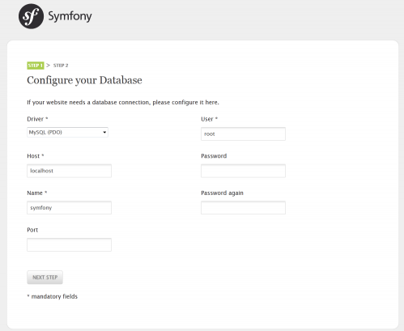

Vous avez toujours pensé que créer un site web était complexe ? Votre code devient rapidement trop lourd ? Qui a dit que le PHP était un langage brouillon ? Vous manquez d'organisation dans votre projet ?
Symfony est là pour vous simplifier la vie !
Avec Symfony vous apprendrez à créer toute sorte d'applications web de manière simple et efficace.
Si Symfony est de plus en plus réputé dans le monde, ce n'est pas par hasard. Il offre une liberté exceptionnelle tout en proposant le respect d'une architecture qui permet de répondre à la plupart de nos attentes et qui permet une grande flexibilité afin que chacun puisse tout de même travailler comme il le souhaite.
En lisant ce tutoriel, vous apprendrez à maîtriser un nouvel outil aux capacités immenses. S'il s'avère que vous n'êtes pas encore très bon dans la programmation web, vous vous rendrez compte de l'énorme niveau que vous aurez acquis. Enfin, j'espère que les plus confirmés y trouveront leur bonheur et la solution à la plupart de leurs problèmes.
Nous y sommes, voici le premier chapitre de ce tutoriel. Nous allons ensemble découvrir Symfony2. Tout d'abord, je lèverai le doute sur la première question qui se pose naturellement :
Symfony2, c'est quoi au juste ? Et d'où est-ce que ça sort d'ailleurs ?
Actuellement, vous avez un niveau correct en PHP. Vous savez structurer votre code afin de réaliser des sites web plus ou moins basiques. Vous connaissez la programmation orientée objet et aimeriez bien enfin pouvoir l'appliquer sur un vrai projet, mais vous ne savez pas forcement comment vous y prendre. Vous avez besoin de clarifier ou de simplifier les choses dans votre code sans toutefois perdre trop de temps. Vous prenez les choses en mains et vous vous interrogez à propos d'une éventuelle solution à tous vos problèmes. Les frameworks sont là pour vous !
Mais bon, un framework, qu'est-ce que ça signifie ?
Que propose un framework ?
Un framework n'est pas indispensable pour réaliser une application web, mais il apporte ce qu'il faut pour être bien plus efficace, rapide et créer une application de qualité ! Un framework vous offre la possibilité de développer une application dans les règles de l'art. Il permet de réaliser une application structurée, maintenable et évolutive. De plus, la flexibilité du framework vous permet de vous concentrer entièrement sur votre application sans trop se soucier du reste. N'ayez crainte, vous maîtrisez toujours l'intégralité de votre application. Le framework va vous apporter certaines briques de base qui permettent de ne pas avoir à réinventer la roue.
Abstraction de la base de données : un framework utilise PDO, une solution qui vous permet d'ajouter une couche d'abstraction entre votre base de données et votre code. Vous n'avez plus à vous soucier du type de base de données qui fonctionne derrière votre application. Un framework embarque aussi généralement un ORM (object relational mapper) qui permet d'installer une couche d'abstraction supplémentaire entre les appels à votre base de données et votre code. Vous pouvez ainsi faire des opérations courantes comme la récupération de données ou la sauvegarde d'un objet sans vous soucier du code SQL à écrire.
Abstraction de la base de données
Couche d’abstraction du cache : Plutôt que d’utiliser des fonctions de mise en cache spécifiques, vous allez pouvoir utiliser des fonctionnalités de mise en cache génériques telles que Memcache, APC et XCache.
Gestion des formulaires : Le framework offre la possibilité de générer en grande partie tous les widgets HTML, il se charge de la validation du formulaire et de la sécurité CSRF (Cross-Site Request Forgery).
Gestion d'utilisateurs : La plupart des frameworks ont tout ce qu'il faut pour pouvoir gérer l'authentification d'utilisateurs. Ils gèrent la connexion, la déconnexion, la création, la gestion des sessions et des droits.
Gestion des erreurs et bien plus : Certains frameworks comme Symfony offrent de très bon outils de débogage ainsi qu'un "profiler" qui permet de vous renseigner sur tout ce qu'il se passe dans votre application (variables globales, requêtes de base de données, logs, temps de chargement, etc.).
Internationalisation : Les frameworks vous permettent de créer facilement le multilingue pour vous et ce, de manière native la plupart du temps.
Moteur de template : De nombreux frameworks intègrent un moteur de templates. Celui-ci permet de simplifier grandement l'écriture de votre code HTML tout en étant propre et efficace.
Vous vous rendez compte du temps qu'il est possible de gagner :waw: ? Avec un framework vous n'avez plus à vous soucier de toutes ces choses si complexes et longues à mettre en place !
Pourquoi utiliser un framework ?
Il y a d'autres avantages à utiliser un framework. D'une part, un framework est portable, de part son abstraction de la base de données et de la gestion générique du cache. Vous l'aurez compris, les temps de développement avec un framework sont réellement plus courts. Tous les outils essentiels sont déjà écrits pour vous. Avec un framework, vous développez une application facilement sécurisable grâce aux systèmes d'authentification, à la gestion des injections SQL ainsi qu'à la protection CSRF qui est gérée par la plupart des frameworks. Les frameworks sont des outils communautaires et ont, par conséquent, des forums, des listes de diffusion et des canaux IRC pour les soutenir. Si vous rencontrez un problème avec un framework, les chances que quelqu’un d’autre ait déjà eu le même problème et ait apporté un correctif sont très grandes, notamment sur les frameworks largement déployés. Encore une bonne nouvelle, sachez que les membres de la communauté développent régulièrement des plugins et des modules que vous pouvez télécharger et utiliser dans votre application.
L'avantage d'un framework, c'est aussi de pouvoir travailler dans le respect des bonnes pratiques et de réutiliser des méthodologies de conception standardisées. On peut particulièrement citer le design pattern MVC, accronyme de l'expression "Modèle - Vue - Contrôleur". Un design pattern est traduit par "patron de conception", c'est donc un modèle qui a fait ses preuves et qui s'avère indispensable à connaitre dans le domaine de la programmation. Découpons un peu tout ça :
Modèle : Le modèle est la partie du code qui se charge d'intéragir avec la base de données. On y retrouve donc les appels SQL que nous aurons définis.
Vue : La vue est la partie du code qui se charge uniquement d'afficher les données qui lui ont été fournies. En aucun cas, la vue ne doit effectuer de traitement sur les données, sauf dans le but d'en embelir l'affichage.
Contrôleur : Le contrôleur est le centre de notre design pattern. Il reçoit la requête HTTP, l'interprète et coordonne le tout. Il se charge de demander au modèle les données puis effectue plus ou moins de traitements dessus afin d'envoyer à la vue les données à afficher et de retourner une réponse à l'émeteur de la requête.
Schématisation du design pattern MVC On remarque bien que chaque phase du travail est bien séparée, ce qui permet une organisation plus claire du code. Chaque chose à sa place.
Tout cela est réjouissant n'est-ce pas ? Sachez tout de même qu'apprendre à utiliser un framework n'est pas une mince affaire. Il faut beaucoup de temps, suivre des cours bien construits afin de parfaire vos connaissances et de maîtriser un nouvel outil. Mais n'oubliez pas que le jeu en vaut la chandelle.
Symfony2 est un framework codé en PHP qui va nous permettre de développer une immensité d'applications web de la plus simple à la plus complexe imaginable. Car en effet, Symfony définit un squelette de base à respecter, mais dans lequel on peut y mettre tout le code que l'on souhaite.
Il n'y a donc aucune limite ! Seule votre motivation pourra vous freiner, mais nous avons tous un énorme potentiel qui ne demande qu'à être exploité. Symfony2 est là pour nous aider à le mettre en avant.
Quelques framework PHP assez connus :
CakePHP
CodeIgniter
Zend Framework
Symfony2
CakePHP est un framework très simple d'utilisation. Facile à appréhender, il fournit un ensemble de briques de base solides et peut facilement être couplé à un ORM
Code Igniter est un très bon framework qui se fait de plus en plus connaitre de part sa qualité. Il n'embarque pas d'ORM mais dispose de l'essentiel pour répondre à la plupart des demandes.
Le ZendFramework est plus considéré comme une grosse bibliothèque de fonctionnalités plutôt qu'un framework à part entière et n'est pas très simple à comprendre pour un débutant. Dans sa version 2, il passe réellement dans la catégorie des frameworks avec une approche très proche de celle de Symfony2. Néanmoins, de solides connaissances sont aussi à prévoir afin d'exploiter correctement l'outil.
Symfony2 est un framework qui dispose d'un bon nombre de briques de base tout en laissant pas mal de libertés au développeur. Cependant, Symfony2 peut être délicat à aborder pour un débutant s'il n'a pas de bonnes connaissances en programmation orientée objet et une certaine maîtrise des technologies web est nécessaire pour en exploiter toute la puissance du produit.
Je vous laisse prendre votre propre décision, mais le sujet de ce tutoriel reste tout de même l'étude du framework Symfony. Je vais tout de même justifier mon choix en vous exposant certains points à connaitre sur le framework dans sa globalité :
Une grande réputation
Lancé en 2005, Symfony est aujourd'hui un framework stable connu et reconnu à l'international. Symfony dispose aussi une communauté active de développeurs, intégrateurs, utilisateurs et d'autres contributeurs qui participent à l'enrichissement continu de l'outil.
Qui est derrière tout ça ?
Derrière Symfony se cache une entreprise : Sensio. Sensio est une agence web créée il y a 12 ans. Oui, ce sont bien des français qui sont derrière Symfony, plus particulièrement Fabien Potencier et toute son équipe. Imaginé au départ pour ses propres besoins, le framework Symfony est aujourd'hui encore l'outil utilisé au quotidien par ses propres équipes. Symfony est un outil qui arrive à répondre aux exigences du monde professionnel.
Fabien Potencier, lead développeur du projet Symfony
Qui utilise Symfony ?
De nombreux sites et applications de toutes tailles et de tous les types ! C'est par exemple le cas de Yahoo!, Dailymotion, Opensky.com, Exercise.com et même des applications telles que phpBB.
De l'innovation
Symfony est tout ce que vous attendez d'un framework : rapidité, flexibilité, des composants réutilisables, etc. De bonnes idées ont fait leur petit bout de chemin, c'est par exemple le cas de l'injection de dépendances. Un concept tout droit venu du monde du Java ! On retrouve aussi une "web debug toolbar" que l'ont peut retrouver dans d'autre framework et qui apporte un une bonne amélioration de la productivité des développeurs.
Avec Symfony, vous n'êtes jamais seul !
Lorsque vous utilisez Symfony, vous êtes assuré de ne jamais vous retrouvez seul. Une communauté se trouve à coté de vous ! Des conversations par mail sont partagées, des channels IRC existent pour que vous exposiez vos problèmes, de nombreux travaux sont publiés régulièrement et bien évidement, le Site du Zéro est là pour vous accompagner !
Utiliser, ré-utiliser, exploiter sans limites
L'idée est de pas vous enfermer dans Symfony ! Permettez-vous de construire des applications qui répondent précisément à vos besoins ! Symfony tend à respecter un maximum de conventions de codage. Ce n'est certes pas parfait, mais le framework s'efforce à respecter des standards comme PSR-0 et HTTP. Enfin, Symfony est distribué sous licence Open Source MIT, qui n'impose pas de contraintes et permet le développement de l'Open Source ainsi que des applications propriétaires.
Alors, convaincu ?
Dans ce premier chapitre, mon but était de vous faire rendre compte de l'utilité d'un framework. Certains n'en verront pas la nécessité dans l'immédiat, d'autres vont prendre conscience de l'énorme quantité de temps qu'il est possible de gagner et se demanderont pourquoi ils ont attendu tout ce temps pour se mettre à utiliser un framework. Enfin, le choix du framework va dépendre de vos envies et de vos besoins. Si Symfony vous motive, je vous invite à poursuivre avec son installation !
Puisqu'il faut bien commencer quelque part, je vous conseille tout d'abord de vous préparer un environnement propre sous apache pour accueillir votre projet Symfony !
Pour ceux qui ont oublié comment faire, je vous suggère de faire un petit tour sur le tutoriel PHP.
Installer php en ligne de commande
Tout d'abord, ouvrez votre console ! Si vous êtes sous Linux vous ne devriez pas avoir de problèmes à suivre, mais au cas où, un petit rappel ne fait pas de mal : c'est par ici. Pour les habitués de Windows : Menu Démarrer > Tous les programmes > Accessoires > Invite de commandes. Enfin, pour les utilisateurs de MacOS, quelque chose comme Accessoires > Console devrait vous guider.
Pour Linux et MacOS, le problème de PHP en ligne de commande ne se pose pas, pour Windows, c'est différent. Voici comment procéder :
Démarrer -> Panneau de configuration -> Système et sécurité -> Système -> Paramètres système avancés
Allez à l'onglet "Paramètres système avancés"
Cliquez sur le bouton "Variables d'environnement"
Regardez dans le panneau "Variables systèmes"
Trouvez l'entrée Path (vous devriez avoir à faire descendre l'ascenseur pour le trouver)
Double cliquez sur l'entrée Path
Entrez votre répertoire PHP à la fin, sans oublier le point virgule (;) avant (par exemple ;C:\php)
Double cliquez sur l'entrée PATHEXT
Ajoutez .PHP à la fin, sans oublier le point virgule (;)
Confirmez en cliquant sur OK
Ensuite, associez l'extension .PHP avec un type de fichier. Ceci peut être fait en exécutant la commande suivante :
assoc .php=phpfile
Enfin, associez le type de fichier phpfile avec l'exécutable PHP approprié. Ceci peut être fait en exécutant la commande suivante :
Si vous utilisez Wamp, il vous suffit cliquer sur l'icone dans votre barre des taches, passer votre curseur sur la ligne Apache et cliquer sur httpd.conf.
Ajoutez ces quelques lignes à la fin de votre fichier :
ServerName localhost
<VirtualHost *:80>
DocumentRoot C:\wamp\www\tuto\Symfony\web
<Directory "C:\wamp\www\tuto\Symfony\web">
DirectoryIndex app_dev.php
Options -Indexes FollowSymLinks SymLinksifOwnerMatch
AllowOverride All
Allow from All
</Directory>
</VirtualHost>
Vérifiez que vous avez bien activé les différentes extensions de php. Toujours dans le menu de Wamp, cette fois-ci placez votre curseur sur le menu PHP puis sur PHP extensions. Vérifiez que php_intl et php_apc soient cochés. Dans le menu PHP settings, vérifiez que vous avez bien désactivé "short open tag". Cliquez ensuite sur php.ini pour l'ouvrir, cherchez la ligne date.timezone et configurez la comme cela : date.timezone = Europe/Paris.
Un redémarrage d'Apache est indispensable pour que les modifications soient prises en compte, cliquez donc sur "Restart all services" depuis le menu de Wamp.
Installer Symfony
Ca y est, tout est prêt ? Et bien installons la bête !
Rendez-vous directement sur le site officiel du framework pour le téléchargement. Prenez la dernière version avec ou sans les vendors, de toutes façons nous allons les télécharger à nouveau.
Une fois téléchargé, décompressez moi tout ça, prenez le dossier Symfony, copier/coller le dans votre dossier web de destination et hop, fini ! Bon d'accord, pas tout à fait, mais c'est un bon début :) .
Si tout va bien, vous devriez avoir cette arborescence :
Afin de vérifier que tout c'est bien passé, vous pouvez exécuter le script de vérification en vous plaçant dans le dossier de Symfony :
php app/check.php
** Mandatory requirements **
OK Checking that PHP version is at least 5.3.2 (5.3.8 installed)
OK Checking that the "date.timezone" setting is set
OK Checking that app/cache/ directory is writable
OK Checking that the app/logs/ directory is writable
OK Checking that the json_encode() is available
OK Checking that the SQLite3 or PDO_SQLite extension is available
OK Checking that the session_start() is available
OK Checking that the ctype_alpha() is available
OK Checking that the token_get_all() is available
OK Checking that the APC version is at least 3.0.17
** Optional checks **
OK Checking that the PHP-XML module is installed
OK Checking that the token_get_all() function is available
OK Checking that the mb_strlen() function is available
OK Checking that the iconv() function is available
OK Checking that the utf8_decode() is available
[[WARNING]] Checking that the intl extension is available: FAILED
*** Install and enable the intl extension (used for validators) ***
[[WARNING]] Checking that a PHP accelerator is installed: FAILED
*** Install a PHP accelerator like APC (highly recommended) ***
OK Checking that php.ini has short_open_tag set to off
OK Checking that php.ini has magic_quotes_gpc set to off
OK Checking that php.ini has register_globals set to off
OK Checking that php.ini has session.auto_start set to off
** Optional checks (Doctrine) **
OK Checking that PDO is installed
OK Checking that PDO has some drivers installed: mysql, sqlite
Activez les extensions php et/ou apache nécessaires au bon fonctionnement du framework et si vous n'avez plus d'erreurs et de warning, poursuivez !
Nous pouvons donc poursuivre, rendez-vous dans le répertoire ou est situé votre projet Symfony. Il nous faut mettre à jour les vendors.
Mais qu'est-ce que c'est les vendors ? Pourquoi devrais-je faire ça ?
Les vendors est un répertoire du projet qui contient toutes les librairies externes au projet qui permettent de la faire fonctionner. Mais ce n'est pas le sujet de ce chapitre, j'y répondrais plus en détails dans le prochain chapitre. Pourquoi vous devez faire cela ? Mais pour installer Symfony pardi !
Passons-en au fait :
php bin/vendors install
Si vous avez téléchargé la version avec les vendors, exécutez la commande suivante pour être sur d'être à jour :
php bin/vendors install --reinstall
Droits d'accès
Etape suivante, ajouter les bons droits d'accès aux dossiers de cache et de logs. Oui, Symfony utilise du cache. Oui, Symfony log pas mal de chose. C'est bon tout ça !
Aidons le un peu, vidons le contenu des deux dossiers puis attribuons leur les bons droits :
rm -rf app/cache/*
rm -rf app/logs/*
# Avec le système d'ACL en sachant que votre système supporte la commande chmod +a
sudo chmod +a "www-data allow delete,write,append,file_inherit,directory_inherit" app/cache app/logs
sudo chmod +a "votre_login allow delete,write,append,file_inherit,directory_inherit" app/cache app/logs
# Ou si votre système supporte setfacl
sudo setfacl -R -m u:www-data:rwx -m u:drdjo:rwx app/cache app/logs
sudo setfacl -dR -m u:www-data:rwx -m u:drdjo:rwx app/cache app/logs
# Le cas échéant, n'utilisez pas les ACL, mais cela est moins sécurisé
chmod 777 app/cache
chmod 777 app/logs
Là, c'est à vous de jouer, généralement il n'y a rien de compliqué. Soit Symfony vous crache dessus parce que vous avez mal configuré les droits sur les dossiers de cache et de logs, ou alors il vous manque certaines extensions php. Dans ce dernier cas, à vous de les activer correctement.
Regardons tout ça de plus près
La configuration est terminée ? Qu'attendons-nous ? Rendons-nous immédiatement sur la page d'accueil du projet : http://localhost/app_dev.php/
Vous remarquez forcement la présence d'un bouton assez explicite : "Configurer", je vous suggère de cliquer dessus. ^^
Le but est de renseigner les différentes informations sur votre système de gestion de base de données à Symfony via une interface web. Tout cela est bien évidement aussi possible en éditant votre fichier parameters.ini situé dans le répertoire app/config :
Afin de démarrer tout ça dans de bonnes conditions, je vous recommande fortement de faire un peu de ménage dans le projet afin de supprimer la démo.
Il vous faut donc supprimer les sources de l'AcmeDemoBundle :
rm -rf src/Acme
Les ressources (images, css, javascripts) doivent eux aussi être supprimés :
rm -rf web/bundles/acmedemo
Ensuite, il faut enlever le bundle correspondant (s'il n'existe plus on ne va pas le charger ^^ ). Rendez-vous donc dans le fichier app/AppKernel.php et supprimez la ligne suivante :
<?php
$bundles[] = new Acme\DemoBundle\AcmeDemoBundle();
Enfin, dans le fichier app/config/routing_dev.php, supprimez les entrées suivantes :
Voila, si tout va bien, vous êtes désormais prêt à travailler dans de bonnes conditions.
Vous êtes désormais prêt à travailler avec Symfony ! Votre application est installée, configurée, accessoirement vous avez mis en place un système de versionnement comme GIT. Bref, tout va bien, nous pouvons poursuivre vers l'étude de l'architecture du framework.
Dans cette partie je vais tâcher de vous faire découvrir de la manière la plus simple qui soit l'architecture du framework. L'architecture, c'est tout simplement la façon dont le code est organisé et structuré au sein du framework et la manière avec laquelle celui-ci a été codé. Alors oui, vous n'allez pas coder durant ce chapitre, mais c'est une étape indispensable pour comprendre ce que vous allez faire par la suite.
Cela représente relativement peu de dossiers mais des dossiers que nous devons découvrir et connaitre afin de mieux cerner notre application.
Le contrôleur principal : le point d'entrée de l'application
Vous devez à priori déjà connaitre le point d'entrée du framework, il y en a toujours un. Il faut bien commencer quelque part n'est-ce pas ? C'est le fichier app.php ! Vous avez dernièrement exécuté le fichier app_dev.php qui vous permet de lancer votre site dans un environnement de développement.
Qu'est-ce qu'il s'y passe ?
<?php
require_once __DIR__.'/../app/bootstrap.php.cache';
require_once __DIR__.'/../app/AppKernel.php';
use Symfony\Component\HttpFoundation\Request;
$kernel = new AppKernel('dev', true);
$kernel->loadClassCache();
$kernel->handle(Request::createFromGlobals())->send();
Symfony charge les fichiers nécessaires (aux lignes 2 et 3) à la gestion du cache (désactivé par défaut en mode 'prod') et à la mise en place du kernel, le coeur de Symfony.
Le kernel est le coeur de votre application, il permet de manipuler les requêtes HTTP en utilisant tous les composants qui lui sont liés. Concrètement, il se charge d'interpréter toutes les requêtes HTTP du client, envoyées depuis votre navigateur, en réponse HTTP, interprétées par la suite par votre navigateur. Dans notre cas, un objet Request est créé, suite à la création d'une nouvelle instance d'AppKernel, chargé de récupérer les variables globales de la requête HTTP reçue ($_GET, $_POST, $_COOKIE, $_FILES, $_SERVER, etc), puis de les envoyer au kernel (ligne 9). À la ligne 8, vous constaterez que le kernel charge la classe qui s'occupe de gérer le cache de notre application qui peut être défini dans la configuration du projet. Par défaut, cette ligne est commentée en environnement de développement.
Et ensuite, comment ça marche ?
Schématisation du flux d’exécution d'une requête par Symfony
Tout est plus simple lorsqu'on laisse Symfony se charger de notre requête. Si nous analysons ce schéma, on constate comme nous l'avons dit juste avant que c'est le contrôleur principal qui reçoit les requêtes http. Celles-ci sont identifiées par des URL comme /contact, /shop, etc. Ensuite, le kernel coordonne le tout. Dans Symfony, il y a un outil appelé le routing. Son rôle est d'associer une URL avec la fonction du contrôleur correspondante. C'est enfin au contrôleur à qui revient le rôle de se servir des informations de la requête pour envoyer la réponse appropriée. C'est donc dans le contrôleur que votre allez créer votre code.
Chaque fonction de vos contrôleurs qui est identifiée par le routing est considérée comme une Action. Ces fonctions doivent respecter une nomenclature bien précise :
<?php
class MonController
{
public function contactAction()
{
return new Response('<h1>Contact nous !</h1>');
}
}
Cette action s'appelle donc 'contact'. Une action se doit aussi de retourner une réponse, quelque soit son format (html, xml, json, etc.).
Vous y voyez déjà plus clair dans le fonctionnement de Symfony ? Très bien, concentrons nous désormais sur notre application !
C'est ici que l'on va retrouver toute la configuration de notre projet. On constatera aussi la présence des dossiers de cache et de logs que nous avons précédemment configurés lors de l'installation du projet.
Mais, il y a encore une histoire de kernel la dedans, c'est quoi ce fichier : AppKernel.php ?
Non, je n'ai pas fini de vous bassiner avec mes histoires de kernel.
Alors, il n'est pas encore ouvert ce fichier o_O ? Mais où est donc passée votre insatiable soif de curiosité ? Bon, AppKernel est une classe, vous l'aurez tous remarqué. Celle-ci hérite de notre fameux Kernel.
Qu'apporte-t-elle de plus ?
L'idée est d'indiquer à notre Kernel tout ce dont il doit se servir pour faire fonctionner votre application. On retrouve deux fonctions principales :
<?php
public function registerBundles()
{
$bundles = array(
new Symfony\Bundle\FrameworkBundle\FrameworkBundle(),
new Symfony\Bundle\SecurityBundle\SecurityBundle(),
new Symfony\Bundle\TwigBundle\TwigBundle(),
new Symfony\Bundle\MonologBundle\MonologBundle(),
new Symfony\Bundle\SwiftmailerBundle\SwiftmailerBundle(),
new Symfony\Bundle\DoctrineBundle\DoctrineBundle(),
new Symfony\Bundle\AsseticBundle\AsseticBundle(),
new Sensio\Bundle\FrameworkExtraBundle\SensioFrameworkExtraBundle(),
new JMS\SecurityExtraBundle\JMSSecurityExtraBundle()
);
if (in_array($this->getEnvironment(), array('dev', 'test'))) {
$bundles[] = new Symfony\Bundle\WebProfilerBundle\WebProfilerBundle();
$bundles[] = new Sensio\Bundle\DistributionBundle\SensioDistributionBundle();
$bundles[] = new Sensio\Bundle\GeneratorBundle\SensioGeneratorBundle();
}
return $bundles;
}
Un peu d'explication ne ferait pas de mal je pense.
RegisterBundles(), ça veux dire quoi ?
Eh bien, un concept est apparu avec Symfony2, les bundles. Un bundle peut être considéré comme une brique de votre application, un module. Il peut être utilisé et ré-utilisé à volonté. Par exemple on pourra construire un bundle 'news' qui s'occupe de la gestion des news ou encore un bundle 'user' pour la gestion de vos utilisateurs. Chaque bundle est indépendant mais peut communiquer avec tous les autres pour former votre application. A vous de mettre le ciment nécessaire ! ^^ Vous aurez beaucoup plus de détails sur le fonctionnement des bundles dans les prochains chapitres. On remarquera que plusieurs bundles sont mis en place par défaut comme FrameworkBundle, SecurityBundle ou encore DoctrineBundle.
La seconde fonction est beaucoup plus simple et s'occupe simplement de charger la configuration demandée par notre front controller :
<?php
public function registerContainerConfiguration(LoaderInterface $loader)
{
$loader->load(__DIR__.'/config/config_'.$this->getEnvironment().'.yml');
}
Vous en savez suffisamment sur la classe AppKernel ? Je ne crois pas, mais ça ira pour l'instant, libre à vous de vous balader dans les tréfonds de notre joyeux kernel !
Il nous reste un dernier point à étudier, un dossier extrêmement important appelé 'config' est présent dans notre application.
Encore de la configuration ?
Eh oui, dans ce dossier vous trouverez tout ce qu'il vous faut pour définir moult constantes pour l'entièreté de votre application. Si l'on reprend notre kernel, on remarque qu'il charge le fichier de configuration correspondant à l'environnement que nous lui avons spécifié depuis le front controller ('dev', 'prod', 'test', etc). Nous retrouvons donc ces différents fichiers dans le dossier de configuration. De cette manière, vous pouvez définir des constantes différentes pour chaque environnement. Si vous souhaitez définir des constantes identiques pour n'importe quel environnement, il vous suffit de les ajouter au fichier config.yml. Bien évidement, vous pouvez vous amuser à scinder vos fichiers de configuration lorsque ceux-ci deviennent trop lourd afin d'obtenir une meilleure lisibilité.
Par exemple, toute la configuration sur la sécurité de votre application est isolée dans le fichier security.yml. On pourra donc imaginer la création d'un fichier shop.yml si le besoin s'en ressent.
Pour ce qui est du reste des fichiers présents dans ce dossier, nous n'avons pas le besoin de les étudier à notre niveau. Par contre, l'exploitation de certaines ressources comme l'autoload ou le cache peuvent être avantageuses par la suite. Mais nous verrons ça en temps et en heure :) !
Tiens, vendors, je suis sûr que vous avez déjà entendu ce mot quelque part ! Lors de la configuration du projet, je vous ai demandé d'installer celles-ci, rappelez-vous !
Qu'est-ce que les vendors ?
Les vendors, ce qui peut se traduire par librairies ou bibliothèque, rassemblent donc toutes les librairies externes à votre projet. Une librairie est un ensemble de fonctions, de classes, regroupées et mises à disposition afin de pouvoir être utilisées sans avoir à les réécrire. Les fonctions sont regroupées de par leur appartenance à un même domaine d'utilisation. Par exemple, cela va correspondre à Symfony, Doctrine, SwiftMailer ou encore Twig. Un ensemble de librairies va constituer un framework comme Symfony2. Symfony étant lui-même une librairie du framework.
Le système de vendors nous permet de ne pas avoir à se soucier de celles-ci. Les librairies sont présentes sur Internet et téléchargées via la commande php bin/vendors install. Lorsque vous installez une nouvelle librairie pour votre application, vous avez simplement besoin de l'ajouter à la liste des librairies à utiliser.
Mais de quelle liste s'agit-il ? Elles sortent d'où toutes ces librairies ?
A la racine de votre projet, vous vous êtes peut-être aperçu de la présence d'un fichier appelé deps. Ce fichier recense toutes les librairies à installer dans votre projet ! Chaque bloc représente une librairie. Prenons l'exemple de Symfony :
[symfony] /* Nom de la librairie */
git=http://github.com/symfony/symfony.git /* Où est-ce que se situe ma librairie sur Internet ? */
version=v2.0.4 /* Quelle est la version de ma librairie ? */
Une autre information est spécifiable, la target (cible) :
target=/bundles/JMS/SecurityExtraBundle
Cette option permet de spécifier directement le dossier dans lequel doit se placer notre librairie.
En résumé, le fichier deps est là pour référencer toutes les vendors nécessaires à votre projet.
Et moi, je code où dans l'histoire ?
J'aurais tendance à dire partout ! Mais un dossier principal va contenir la grande majorité de nos sources, c'est le dossier src. Il porte bien son nom vous ne trouvez pas ? Mais il est vide ! Comment est-ce que je m'y prends moi ?
Nous allons découvrir ça tout prochainement en faisant nos premiers pas dans le développement de notre application. S'il y a bien quelque chose à retenir de Symfony2, c'est qu'il propose une structure de base avec des briques logicielles qui permettent de faire beaucoup de choses de manière simple. Il essaye d'imposer des standards. Libre à vous de les respecter ou non. Symfony propose tout ce qu'il faut pour gérer vos templates et vos contrôleurs. Des outils comme Doctrine permettent de gérer facilement toute la couche modèle de l'application. Symfony2 est une base, servez-vous en comme une structure. N'hésitez pas à ajouter vos propres outils pour répondre à vos besoins, entreprenez et innovez !
Un des outils les plus indispensable en cours de développement avec Symfony2 est la web debug toolbar, plus communément appelée profiler. A quoi cela ressemble ?
Cette barre nous offre pas mal d'informations dès le premier coup d'oeil.
La version de Symfony, ici 2.0.4
La version de php est les éventuelles extensions d'activées
Les informations sur notre environnement
Quelques informations techniques de notre page
Le temps d’exécution de la page
La quantité de mémoire utilisée pour la génération de notre page
Les informations sur notre utilisateur
Le nombre de requêtes exécutées en base de données
Cela fait beaucoup d'informations n'est-ce pas ?
Reprenons pas à pas. Les deux premiers points sont assez clairs, pour notre environnement, on peut lire que nous sommes dans l'application en environnement de développement. Le mode de débogage est activé. Pour les informations techniques, nous lisons le nom du contrôleur suivi de la fonction qui est appelée. Enfin, on observe le nom de notre route et le statut http de la page. Dons si l'on reprend : contrôleur::fonction|route|statut. Dans Symfony, une route est un objet qui défini le contrôleur et la fonction à exécuter en fonction de l'url, donc de la requête, demandée par l'utilisateur. C'est assez efficace pour rapidement se repérer dans notre application. Pour le reste, j'estime que l'information est suffisamment claire pour ne pas avoir besoin d'explications supplémentaires.
Qu'est-ce qu'il s'y passe ?
Le profiler est bien plus puissant que cela. Il suffit simplement de cliquer sur l'une des icônes pour le comprendre.
On remarque rapidement que l'on a accès à bien plus d'informations et ce de manière extrêmement détaillée.
Que trouve-t-on dans l'onglet config ? Toute la configuration de notre projet ! Logique non ? Cela passe par l'environnement, la configuration de PHP et la liste des bundles activés
Que trouve-t-on dans l'onglet request ? Tout ce qu'il est possible de savoir sur la requête HTTP envoyée par le client. On retrouve donc les paramètres GET et POST, les headers http, la session, les cookies, les différents paramètres du serveur et en bonus, nous avons les informations essentielles sur notre réponse http (ce que nous renvoyons au client).
Que trouve-t-on dans l'onglet exception ? Votre application est susceptible de lever des exceptions. Une erreur SQL, une exception levée par le dysfonctionnement d'un script PHP, tout arrive, mais tout est contrôlé.
Que trouve-t-on dans l'onglet events ? Cet page recense l'ensemble des listeners de votre application. Vous savez qui est intervenu, qui a agit pour afficher votre page. On retrouve le routeur, la session, le gestionnaire de requête http, etc.
Que trouve-t-on dans l'onglet logs ? Les logs répertorient la plupart des actions qui sont effectuées sur votre application. L'ordre des logs correspond à l'ordre d’exécution réel.
Que trouve-t-on dans l'onglet security ? Cet onglet correspond à un petit rapport sur l'utilisateur actuel. Qui est-il ? Est-il authentifié ? Quels rôles à-t-il ?
Que trouve-t-on dans l'onglet e-mails ? Tout simplement les e-mails que vous envoyés depuis votre application. L'outil idéal pour vérifier l'envoie correct de vos e-mails sans à avoir besoin de consulter votre boîte mail.
Que trouve-t-on dans l'onglet Doctrine ? C'est ici que vous pourrez observer l'ensemble des requêtes sql exécutées par votre application. Vous êtes aussi informé du temps d’exécution de chacune d'entre elles. Un outil idéal pour faciliter l'optimisation SQL de votre application !
A quoi me sert le menu de recherche ? Tout simplement à vous indiquer les dernières actions effectuées sur l'application. Idéal pour se souvenir de notre parcours.
Le profiler est un outil évolué correspondant à une source énorme d'informations qui devient rapidement indispensable lors du développement. Je n'ai donc qu'une chose à vous conseiller, usez-en et abusez-en autant que vous le pouvez !
Cette partie nous a permis d'en savoir plus sur le fonctionnement de Symfony. On retiendra une architecture très simple qui segmente correctement le code afin de ne pas tout mélanger. Code propre, efficacité, facilité d'accès, que demander de plus ?
Développer une application, c'est aussi avoir l'esprit créatif tout en faisant attention à ne pas réinventer la roue. Vous l'aurez compris, avec un framework comme Symfony2, les possibilités sont immenses !
Alors pourquoi pas vous ? Lancez vous dans l'aventure et créez l'application de vos rêves !
Dans ce chapitre, je vous propose de passer un peu à la pratique avec la création de notre premier bundle. Le but de cet exercice est de découvrir l'architecture que nous propose Symfony pour organiser notre code source et de mettre en place quelques pages de manière assez simpliste.
Vous voilà désormais prêt à entrer dans le vif du sujet. Nous allons enfin pouvoir nous occuper de la création de nos premières pages avec Symfony. Le dossier de sources ne va pas rester vide bien longtemps, croyez moi.
Notre but dans cet exercice va être de créer une sorte de petit site vitrine, juste avec les pages essentielles. Cet exercice va nous permettre de prendre en mains l'architecture proposée par Symfony et de découvrir, ou de redécouvrir pour certains, le fonctionnement du système de gestion des urls.
Un bundle représente un ensemble de dossiers et sous-dossiers, une strucure de base prédéfinie. un bundle permet d'organiser clairement son code en respectant l'architecture MVC vue dans le premier chapitre.
Afin de voir à quoi cela ressemble je vous propose de commencer par générer notre premier bundle. Oui, vous ne rêvez pas, Symfony permet de générer facilement du code à votre place afin d'obtenir un gain de temps conséquent. Nous appelerons notre bundle "Welcome".
Répondez simplement par un appui sur la touche 'Entrée' aux différentes questions, sauf si vous souhaitez appliquer vos propres paramètres, mais si c'est la première fois, ne changez rien. Une seule chose doit être spécifiée, répondez 'yes' à cette question afin qu'il génère l'intégralité des dossiers et sous dossiers requis : Do you want to generate the whole directory structure [no]? yes.
Welcome to the Symfony2 bundle generator
Your application code must be written in bundles. This command helps
you generate them easily.
Each bundle is hosted under a namespace (like Acme/Bundle/BlogBundle).
The namespace should begin with a "vendor" name like your company name, your
project name, or your client name, followed by one or more optional category
sub-namespaces, and it should end with the bundle name itself
(which must have Bundle as a suffix).
Use / instead of \ for the namespace delimiter to avoid any problem.
Bundle namespace [tuto/WelcomeBundle]:
In your code, a bundle is often referenced by its name. It can be the
concatenation of all namespace parts but it's really up to you to come
up with a unique name (a good practice is to start with the vendor name).
Based on the namespace, we suggest tutoWelcomeBundle.
Bundle name [tutoWelcomeBundle]:
The bundle can be generated anywhere. The suggested default directory uses
the standard conventions.
Target directory [C:\wamp\www\tuto\Symfony/src]:
Determine the format to use for the generated configuration.
Configuration format (yml, xml, php, or annotation) [yml]:
To help you getting started faster, the command can generate some
$
Do you want to generate the whole directory structure [no]? yes
Summary before generation
You are going to generate a "tuto\WelcomeBundle\tutoWelcomeBundle" bundle
in "C:\wamp\www\tuto\Symfony/src/" using the "yml" format.
Do you confirm generation [yes]?
Bundle generation
Generating the bundle code: OK
Checking that the bundle is autoloaded: OK
Confirm automatic update of your Kernel [yes]?
Enabling the bundle inside the Kernel: OK
Confirm automatic update of the Routing [yes]?
Importing the bundle routing resource: OK
You can now start using the generated code!
Sympathique ce générateur n'est-ce pas ?
Mais décortiquons un peu tout cela. La première étape consiste à spécifier le namespace de notre bundle. C'est à dire, dans quel espace, dans quel groupe faut-il placer le bundle. Je vous redirige à nouveau vers le tutoriel correspondant pour ceux qui ont quelques trous de mémoire à ce sujet : Les espaces de noms en PHP. Ensuite, vous deviez spécifier le nom de votre bundle. Par défaut, il s'agit d'une concaténation du nom du namespace or, il est parfois possible que vous choisissiez de lui donner un nom différent, plus explicite à votre goût, bref vous êtes libre. Cette étape précède la spécification du lieu de destination de vos sources nouvellement créés. Par défaut, celles-ci sont placées dans le dossier src. L'étape suivante consiste à choisir le format des fichiers de configuration. Là, plusieurs choix s'offrent à vous : yml, xml, php, ou les annotations. Je vous propose de découvrir ensemble ces différents formats afin que vous puissiez choisir celui qui convient le mieux à vos préférences et à vos besoins.
Langage
Descriptif
Exemple
YML
Le YML est un langage facilement lisible par l'homme. Les entrées se font par indentation. L'écriture est donc très rapide et facile !
Verbeux mais très flexible, le XML est un langage de balises génériques, c'est-à-dire qu'il est possible de créer les entrées de notre choix, en respectant un schéma précédemment mis en place. C'est un langage qui est très utilisé pour les web services car le rendu peut-être interprété par toutes les plateformes/OS. C'est malheureusement un langage très verbeux et assez difficile à lire rapidement, contrairement aux autres.
Le PHP, vous le connaissez, pas besoin de vous faire un dessin, c'est rapide, mais assez lourd à écrire face à des langages comme le YML. L'avantage est de pouvoir aussi l'écrire directement dans vos objets et donc de centraliser la configuration et les objets dans un seul et même fichier. Le PHP présente aussi l'avantage d'être dynamique et donc de pouvoir récupérer des paramètres "à la volée" depuis différents systèmes de stockages, une souplesse incomparable.
Définition d'une route :
<?php
// src/Acme/HelloBundle/Resources/config/routing.php
use Symfony\Component\Routing\RouteCollection;
use Symfony\Component\Routing\Route;
$collection = new RouteCollection();
$collection->add('hello', new Route('/hello/{name}', array(
'_controller' => 'AcmeHelloBundle:Hello:index',
)));
return $collection;
Annotations
Le système d'annotations centralise la configuration dans les fichiers de nos objets. Ainsi, vous n'êtes plus perdu lorsque vous lisez votre code. Vous savez où vous êtes, ce que fait et ce dont est capable chaque attribut/fonction de votre objet. L’écriture se fait dans les commentaires de vos objets, c'est donc modifiable en quelques secondes lorsque l'on traite un fichier !
Définition d'un objet Doctrine :
<?php
/** @Entity */
class MyPersistentClass
{
/** @Column(type="integer") */
private $id;
/** @Column(length=50) */
private $name; // type defaults to string
//...
}
Côté performances, tout se vaut. Le choix se fait réellement uniquement par souci de lisibilité et de préférence. Pour ce qui est des fichiers de configuration principaux, j'ai choisi de vous orienter vers le format yml. Libre à vous d'utiliser celui que vous souhaitez !
Reprenons le processus de génération de bundle. Afin de démarrer rapidement, Symfony vous propose de générer l'ensemble de l'arborescence de destination de votre bundle. Ensuite, vous accédez à un petit récapitulatif de vos choix que vous devez confirmer pour poursuivre. Votre code est enfin généré. Symfony vérifie si votre namespace a bien été enregistré et vérifie donc si le namespace sera bien chargé par Symfony.
Vous devriez comprendre les deux prochaines lignes d’exécution assez facilement puisque nous avons étudié ce point lors du précédent chapitre.
Confirm automatic update of your Kernel [yes]?
Enabling the bundle inside the Kernel: OK
Si nous reprenons notre objet kernel, nous observerons que l'enregistrement de notre bundle a été fait automatiquement, si vous l'avez confirmé lors de la génération :
<?php
class AppKernel extends Kernel
{
public function registerBundles()
{
$bundles = array(
new Symfony\Bundle\FrameworkBundle\FrameworkBundle(),
new Symfony\Bundle\SecurityBundle\SecurityBundle(),
new Symfony\Bundle\TwigBundle\TwigBundle(),
new Symfony\Bundle\MonologBundle\MonologBundle(),
new Symfony\Bundle\SwiftmailerBundle\SwiftmailerBundle(),
new Symfony\Bundle\DoctrineBundle\DoctrineBundle(),
new Symfony\Bundle\AsseticBundle\AsseticBundle(),
new Sensio\Bundle\FrameworkExtraBundle\SensioFrameworkExtraBundle(),
new JMS\SecurityExtraBundle\JMSSecurityExtraBundle(),
new tuto\WelcomeBundle\tutoWelcomeBundle(), # C'est à la suite des autres bundles que le votre a été rajouté
);
if (in_array($this->getEnvironment(), array('dev', 'test'))) {
$bundles[] = new Symfony\Bundle\WebProfilerBundle\WebProfilerBundle();
$bundles[] = new Sensio\Bundle\DistributionBundle\SensioDistributionBundle();
$bundles[] = new Sensio\Bundle\GeneratorBundle\SensioGeneratorBundle();
}
return $bundles;
}
public function registerContainerConfiguration(LoaderInterface $loader)
{
$loader->load(__DIR__.'/config/config_'.$this->getEnvironment().'.yml');
}
}
Pour finir, il vous est demandé de confirmer la mise à jour du routing pour votre bundle. Nous avons déjà abordé très légèrement le système de route lors du chapitre précèdent, nous y reviendrons plus en détails dans la suite de ce chapitre. Néanmoins, vous pouvez observer dans le fichier app/config/routing.yml que le routing de votre bundle y a été inclus :
Voilà, nous en avons terminé avec la génération de bundle comme nous le dit le générateur lui-même, nous sommes maintenant prêt à utiliser le code généré !
Nous y sommes, vos premières pierres ont été déposées dans le dossier de sources de votre projet Symfony. Je vous propose tout de suite de regarder tout ca de plus près.
Cela fait pas mal de dossiers et fichiers n'est-ce pas ? Toujours dans le but de vous permettre de maîtriser au maximum votre application, je vous propose de découvrir et de comprendre l'utilité de chacun d'entre eux à travers la création d'une première page.
La première étape va être de créer le contrôleur de notre page d'accueil. Pour cela, ouvrez le dossier 'Controller' et commencez par renommer le 'DefaultController' en 'HomepageController'. Poursuivez en modifiant notre contrôleur lui-même en y inscrivant ce code :
<?php
namespace tuto\WelcomeBundle\Controller;
use Symfony\Bundle\FrameworkBundle\Controller\Controller;
class HomepageController extends Controller
{
public function indexAction()
{
return $this->render('tutoWelcomeBundle:Homepage:index.html.twig');
}
}
Nous voici donc dans notre premier contrôleur, celui-ci hérite de la class Controller, c'est un vrai petit bijou, une montagne de fonctionnalités s'offrent à nous !
Mais que ce passe-t-il par ici ?
Et bien ce contrôleur est assez simpliste. Nous commençons simplement par définir à quel namespace il appartient. Nous importons ensuite la classe 'Controller' afin que notre classe puisse hériter de celle-ci. La seule fonction présente pour le moment est appelée 'action'. Souvenez-vous, dans le chapitre précèdent, nous avons vu la manière avec laquelle sont gérés les contrôleurs, c'est un ensemble d'actions qui peuvent être exécutées. Cette première action appelée 'index' se contente de retourner le rendu du template spécifié 'tutoWelcomeBundle:Homepage:index.html.twig'. C'est à dire que notre template est situé dans le bundle tutoWelcomeBundle, plus précisément dans le dossier 'Ressources/views/Homepage' du bundle en question. Vous l'aurez compris, il est très facile de se servir d'un template présent dans un autre bundle. Je vous propose donc de créer le template en question, si ce n'est pas déjà fait. ^^
Comment ça vous trouvez l'extension .html.twig quelque peu étrange ? Pas d’inquiétude, le moteur de template de base utilisé par Symfony est Twig. Nous allons très rapidement l'étudier !
Avant toutes choses, nous devons informer Symfony de la présence de notre nouveau contrôleur. De cette manière, nous allons lui indiquer comment pouvons-nous y accéder. C'est à dire, quelle route faut-il inscrire pour arriver sur ma page. Rendez-vous donc dans le fichier 'Ressources/config/routing.yml' et inscrivez ceci à la place de ce qu'il y a déjà :
Besoin d'un peu d'explications ? Je n'en doute pas. :p tutoWelcomeBundle_homepage, c'est le nom que nous avons donné à notre route, vous pouvez le changer sans problèmes. Sachez juste que lorsque vous faites un lien vers votre contrôleur, c'est ce nom qu'il faudra utiliser. Le pattern, c'est la forme de notre route. Pour la homepage, nous avons besoin d'exécuter le contrôleur à la racine de notre site, d'où le '/'. Les routes peuvent prendre toutes sortes de formes, par exemple : /boutique/produit/consuler/{id_produit}. Le dernier terme écrit entre les accolades est un paramettre de type GET qui doit être spécifié pour accéder à notre contrôleur. Ensuite, l'option 'defaults' nous permet de diriger la route vers le bon contrôleur. Dans notre cas, nous indiquons au routing de se diriger vers le bundle tutoWelcomeBundle, plus spécifiquement vers le contrôleur Homepage et enfin d'exécuter l'action 'index'.
Bon, il faut bien y mettre quelque chose dans ce template, non ? Je vous propose d'utiliser un petit design assez simpliste pour donner un peu de forme à notre site. Afin d'avoir une bonne organisation dans mes templates, j'ai pris la décision de créer un layout. Un layout est un template qui va 'entourer' vos autres templates. Ainsi, il y aura une inclusion de votre template 'index.html.twig' dans le template 'layout.html.twig'. Cela est indispensable pour tout simplement ne pas avoir à ré-écrire le code récurrent comme les menus, l'entête, etc. Créez donc un nouveau template appelé 'layout.html.twig' à la racine du dossier 'views' et ajoutez-y ceci :
Ainsi, dans votre template 'index.html.twig' vous n'avez plus qu'a mettre ceci :
{% extends "tutoWelcomeBundle::layout.html.twig" %}
{% block title "Homepage" %}
{% block content %}
Vous êtes en train de lire la première page générée avec Symfony2, la homepage.
{% endblock %}
Mais, c'est quoi toutes ces choses entre accolades avec des symboles % partout ? Un peu d'explications ?
C'est le fameux moteur de template Twig ! Twig nous permet de fonctionner par blocs et utilise un système d'héritage pour les templates. Des blocs comme le bloc title permettent de définir un emplacement avec un identifiant unique qui peut être réutilisé par toutes les templates qui hériterons de la template principale. Si nous prenons l'exemple du layout et de notre index, nous avons l'index qui hérite du layout. Dans le layout, nous avons un espace 'title' qui est réservé. Celui-ci est directement renseigné dans le template 'index' afin de remplir cet emplacement de telle sorte à ce que nous ayons un titre à notre page. C'est de la même manière que le bloc 'content' est défini. Afin d'hériter d'un template, il est nécessaire de le spécifier au début de notre template :
Twig permet aussi d'effectuer facilement des liens vers nos ressources ou vers d'autres routes de notre application :
<!-- lien vers des ressources -->
{{ asset('bundles/tutowelcome/css/welcome.css') }}
<!-- lien vers une route de notre application -->
{{ path('tutoWelcomeBundle_homepage') }}
Et le design dans l'histoire ? Pas de panique, nous y arrivons. Le dossier Ressources est plein... De ressources ! Il contient notamment l'ensemble de nos fichiers css, javascript et nos images qui se trouvent dans le dossier 'public'.
Tout est prêt ? Ça y est, nous pouvons voir ce que ça donne ?
Aperçu de la homepage
Alors, heureux ? Félicitations, vous venez de réaliser votre première page avec Symfony2 !
Vous venez de faire vos premiers pas avec le système de bundle de Symfony. Avec un peu d'entrainement, tout ça vous paraîtra très simple. Nous avons découvert pas mal de nouveaux outils, je pense notamment au contrôleur et au système de routing. Je vous propose de les étudier de manière plus complète dans le prochain chapitre ! Faites chauffer vos cerveaux, beaucoup de nouvelles fonctionnalités sont au rendez-vous !
Bienvenue dans ce nouveau chapitre destiné à l'étude des nombreuses possibilités offertes par les contrôleurs et le routing ! Le tout en aboutissant sur un premier petit TP qui va vous permettre d'effectuer vos premières interactions avec l'utilisateur !
Le routing est un outil très puissant, fourni par Symfony. Vous l'avez surement déjà bien compris lors des précédents chapitres, mais un petit rappel ne fait pas de mal. Il se charge d'effectuer la liaison entre l'URI fournie dans la requête et l'action du contrôleur à exécuter.
Rappel de la structure de base
Reprenons la route que nous avons écrit pour la page d'accueil :
Nous avons donc le nom de la route, 'homepage', la forme de notre route définie par le pattern ainsi que le contrôleur à exécuter. Mettons un peu d'exotisme dans tout cela.
Une route un poil plus complexe
Nous pouvons simplement mettre un nom un peu plus parlant à nos différentes routes en définissant des noms plus complexes. Si nous souhaitons créer la page d'accueil d'un blog, il n'est pas incohérent d'ajouter le mot 'blog' suivi du mot 'articles', dans le but d'afficher une liste d'articles, dans notre url.
Que diriez-vous de rendre notre route paramétrable ?
Je vous propose de prendre un exemple tout simple, celui d'un système de pagination. Nous devons lister une série d'articles dans notre blog. Cependant, nous souhaitons n'en afficher que cinq par page. Alors, comment accéder à chacune des différentes pages ? Il suffit simplement de rajouter ce qu'on appelle un 'placeholder', traduit par espace réservé, à notre route.
Que ce passe-t-il si l'utilisateur met n'importe quoi en paramètre ? Je ne veux pas avoir à afficher la page numéro 'toto' moi !
C'est là qu’intervient la définition de nos paramètres via certaines exigences appelées 'requirements'. Par exemple, si nous souhaitons que notre paramètre 'page' soit un chiffre, il suffit de le demander ! ^^
Vous l'aurez sans doute remarqué, nos exigences sont définies par des expressions régulières. J'espère que vous êtes tous au point la dessus, non ? :p Bref, '\d+' signifie que notre paramètre doit être un chiffre de longueur zéro ou plus. Désormais, si le paramètre ne respecte pas cette contrainte, la route ne sera pas effectuée entre l'URI et le contrôleur.
Dans notre cas, le paramètre est obligatoire et se doit d'être spécifié pour que la route soit reconnue. Cela n'est pas forcément très esthétique si nous souhaitons accéder à la première page d'articles. Il serait préférable que dans ce cas le paramètre ne soit pas obligatoire. Pour cela, rien de plus simple, il suffit de lui donner une valeur par défaut :
D'autres contraintes sont possibles, notamment une qui me semble importante, celle du type de la méthode employée par la requête. Je m'explique, comme vous le savez, une requête peut être de plusieurs types (GET, POST, PUT, DELETE, etc.). Afin de pouvoir séparer votre code dans différents contrôleurs, vous pouvez spécifier la methode http de votre route. Ainsi, si vous souhaitez utiliser la même url pour l'affichage d'un formulaire et pour le traitement et que vous souhaitez séparer votre code dans deux actions distinctes, il vous suffit de spécifier la méthode de cette manière :
Un dernier point qui peut être intéressant à aborder est le système de préfixes. Vous avez sans doutes déjà aperçu ce mot clé lors de la création du bundle :
Cette option nous permet de définir un préfixe pour toutes les routes d'un même bundle. De cette manière, si nous ne voulons pas ré-écrire le mot 'blog' dans chacune de nos routes, il suffit de définir un préfixe pour le bundle :
Une bonne chose à savoir aussi, si vous souhaitez faire une application sécurisée, vous pouvez spécifier l'utilisation du protocole https dans vos routes grâce à la contrainte suivante :
requirements:
_scheme: https
Utilisez vos routes dans votre contrôleur et votre template
Dans le contrôleur
Une fois dans votre contrôleur, vous pouvez toujours continuer de jouer avec vos routes. Vous pouvez en récuperer les différents paramètres, en générer l'url correspondant en fournissant les bons paramètres, etc.
<?php
$params = $this->get('router')->match('/blog/articles/2');
# array('page' => 2, '_controller' => 'tutoWelcomeBundle:Homepage:index')
$uri = $this->get('router')->generate('homepage', array('page' => 1));
# /blog/articles/1
# Si votre contrôleur étant la classe Controller, vous pouvez utiliser le raccourci suivant :
$uri = $this->generateUrl('homepage', array('page' => 1));
Vous pouvez rajouter autant de paramètres que vous le souhaitez dans le tableau correspondant lors de la génération d'une uri. Même si ces paramètres ne sont pas définis dans votre route, il seront ajoutés à la suite de l'uri comme de simple paramètre GET. Pour générer une url absolue, il suffit de rajouter un troisième paramètre à votre appel à la méthode 'generate', troisième paramètre qui prendra la valeur 'true'.
Dans le template
Pour les templates, vous savez déjà comment faire car vous l'avez fait pour votre page d'accueil. Néanmoins, un petit supplément s'ajoute avec l'apparition des paramètres. Construisez votre lien en spécifiant les paramètres comme suit :
Je vous propose de découvrir les différentes fonctionnalités de base du contrôleur à travers un simple petit exercice. Le but va être de proposer une url avec laquelle notre utilisateur pourra indiquer son nom en guise de paramètre puis nous le redirigerons vers la page d'accueil en lui souhaitant la bienvenue. Simple et sympathique n'est-ce pas ?
Nous allons faire ce premier exercice ensemble. Plusieurs choses sont à prévoir :
Créer notre contrôleur
Créer la route correspondante
Récupérer le nom de notre utilisateur via un paramètre GET
Enregistrer notre utilisateur en session
Rediriger notre utilisateur vers la page d'accueil
Afficher un petit message de bienvenue personnalisé à notre utilisateur
Dans un premier temps, il nous faut créer notre contrôleur, pour cela, rien de plus simple. Nous allons conserver notre classe WelcomeController et y rajouter une action. Nous l'appelerons 'whoAmI' (qui suis-je ?) :
<?php
public function whoAmIAction()
{
}
Cette action est vide pour le moment. La deuxième étape consiste à créer la route nous permettant d’accéder à notre contrôleur fraîchement créé. Pour cela, rendez-vous dans le fichier de routing correspondant à votre bundle, situé dans le dossier Ressources/config et ajoutez les lignes suivantes :
Si nous regardons en détails cette route, nous avons une forme d'url toute simple du type : http://localhost/qui-suis-je/mon_super_pseudo La contrainte '\w+' symbolise l'obligation d'un caractère alphanumérique ou d'un tiret de soulignement. Cela correspond à taper [a-zA-Z0-9_]. Logique pour un pseudo.
Afin de récupérer le nom de notre utilisateur nous devons créer la variable correspondante dans le contrôleur :
<?php
public function whoAmIAction($name)
{
echo $name; # Affiche 'mon_super_pseudo'
}
Si vous le souhaitez, vous pouvez réunir les différentes informations relative au routing dans votre contrôleur en utilisant les annotations. Pour cela, rien de plus simple, il vous suffit d'importer la classe Routing du FrameworkExtraBundle :
<?php
use Sensio\Bundle\FrameworkExtraBundle\Configuration\Route;
Ensuite, c'est sur les différentes action du contrôleur que nous intervenons grace à l'annotation @Route :
<?php
/**
* This action display the name parameter.
*
* @Route("/qui-suis-je/{name}", name="whoami", requirements={
* "name"="\w+"
* })
*
* @param string $name The name the user wants to display
*/
public function whoAmIAction($name)
{
echo $name; # Affiche 'mon_super_pseudo'
}
Comment est-ce que je m'y prend si je n'ai pas défini le paramètre dans ma route, mais que je l'ai simplement rajouté à la suite de mon url comme un paramètre $_GET standard ?
<?php
public function whoAmIAction()
{
$request = $this->getRequest();
$name = $request->query->get('name'); # récupère le paramètre $_GET['name']
echo $name; # Affiche 'mon_super_pseudo'
}
Faisons une petite pose et apprenons en un peu plus sur l'objet Request. Celui-ci peut-être récupérer automatiquement par Symfony dans votre contrôleur en le passant en paramètre à votre action :
<?php
public function whoAmIAction(Request $request)
{
$name = $request->query->get('name'); # récupère le paramètre $_GET['name']
echo $name; # Affiche 'mon_super_pseudo'
}
Cet objet Request nous permet d'avoir accès à diverses variables globales de manière très simple :
query: Vous le connaissez déjà, il est récupère un paramètre $_GET ($request->query->get('name'))
request: Equivalent de la variable $_POST
cookies: Equivalent de la variable $_COOKIE
attributes: Cet attribut vous permet de manipuler des paramètres personnalisés dans une requête. On peux citer les variables _controller et _route que vous avez pu configurer avec le routing.
files: Equivalent de la variable $_FILE
server: Equivalent de la variable $_SERVER
headers: Vous permet de manipuler les entêtes de votre requête ($request->headers->get('Content-Type')).
Les doutes sont levés ? Très bien, nous allons maintenant enregistrer le nom de notre utilisateur en session afin de pouvoir en disposer n'importe où dans notre application :
<?php
public function whoAmIAction($name)
{
# get the session
$session = $this->get('session'); # Le raccourci $this->getSession() est disponible.
# store the user'name in the session
$session->set('user_name', $name);
}
Vous l'aurez remarquez, plus besoin d'utiliser la fonction 'session_start()' en chaque début de script, Symfony met à notre entière disposition un objet qui permet de gérer les sessions de nos utilisateurs. C'est ce qu'on appelle un service.
La prochaine étape est de rediriger l'utilisateur vers la page d'accueil. Nous allons utiliser la fonction de redirection du contrôleur ainsi que la fonction de génération d'url qui y est fournis pour retourner la réponse que nous souhaitons, c'est à dire, la page d'accueil :
En rajoutant cette ligne à la fin, votre action va automatiquement vous rediriger vers la route homepage à la fin de son exécution. La fonction générateUrl() est un simple raccourci fourni par le contrôleur qui est en tout point équivalente à l'utilisation directe du routeur :
<?php
# Ce code est parfaitement équivalent
return $this->redirect($this->container->get('router')->generate('homepage'));
La dernière étape consiste à afficher le message de bienvenue personnalisé à notre utilisateur. Pour cela, il existe ce qu'on appel des messages flash. Ces messages ne sont valable que pour un seul affichage de votre page. Lorsque vous activez un message flash, celui-ci ne sera affiché que lors du rendu du prochain template. Si vous n'en créez pas de nouveaux, il ne sera plus affiché. Afin que notre message soit persistant sur notre page d'accueil, nous allons le ré-écrire à chaque appel de celle-ci.
<?php
public function indexAction()
{
$this->get('session')->setFlash('notice', 'Bienvenue à toi '.$this->get('session')->get('user_name').' !');
return $this->render('tutoWelcomeBundle:Homepage:index.html.twig');
}
De la même manière que pour la définition des routes, nous pouvons aussi définir les templates à utiliser sous forme d'annotations. Utilisez la aussi une classe du FrameworkExtraBundle :
<?php
use Sensio\Bundle\FrameworkExtraBundle\Configuration\Template;
C'est de l'annotation @Template que nous avons besoin :
<?php
/**
* @Template()
*/
public function indexAction()
{
$this->get('session')->setFlash('notice', 'Bienvenue à toi '.$this->get('session')->get('user_name').' !');
}
Si nous ne lui spécifions pas de paramètres, le template sera récupérer automatiquement en suivant les conventions de nommage de votre contrôleur. Dans notre cas, nous sommes dans le contrôleur WelcomeController, dans l'action whoAmIAction. Notre template sera sera donc à cet emplacement : tutoWelcomeBundle/Ressources/views/Welcome/whoAmI.html.twig.
Cette annotation suffit pour des usages simple. Mais vous arriverez vite à l'utilisation directe de l'objet Response et vous ne pourrez plus utiliser cette annotation.
Afin que ce message soit vu, il nous faut l'afficher dans le template, reprenons notre layout et modifions le header comme suit :
<header>
<a href="{{ path('homepage') }}" title="Retour à l'accueil">Tutoriel Symfony2</a>
<p>
{% for key, flash in app.session.getFlashes() %}
{% if flash %}
{{ flash }}
{% endif %}
{% endfor %}
</p>
</header>
Mais dis moi, nous n'avons pas encore vu cette structure dans nos template ? Cela ressemble à une boucle 'for', non ?
Effectivement, cette structure est bien une boucle for. Si nous décortiquions un peu tout ça ?
<header>
<a href="{{ path('homepage') }}" title="Retour à l'accueil">Tutoriel Symfony2</a>
<p>
<!-- Je parcours l'objet 'app.session.getFlashes(), donc les messages flash enregistrés en sessions, et je sauvegarde la clé dans la variable 'key' -->
{% for key, flash in app.session.getFlashes() %}
<!-- Si mon message existe (équivalent du isset() en php) -->
{% if flash %}
<!-- Alors je l'affiche (équivalent du echo en php) -->
{{ flash }}
{% endif %}
{% endfor %}
</p>
</header>
Tout simple n'est-ce pas ?
Informons simplement l'utilisateur de cette nouvelle fonctionnalité en complétant notre template 'index' :
{% block content %}
<p>
Vous êtes en train de lire la première page générée avec Symfony2, la homepage.
<br><br>
Pour mieux vous connaitre, informez-nous de votre pseudo en tapant cette url dans votre barre d'adresse et en y ajoutant votre pseudo :
<strong>http://localhost/qui-suis-je/mon_super_pseudo</strong>
</p>
{% endblock %}
Et hop, le tour est joué !
Rendu de la page d'accueil après avoir renseigné le pseudo via notre nouvelle action.
Passer des paramètres au template
Vous pouvez très facilement passer des paramètres à un template depuis votre contrôleur. Si nous souhaiterions passer le paramètre $name au template nous ferions comme cela :
<?php
public function indexAction()
{
return $this->render('tutoWelcomeBundle:Homepage:index.html.twig', array('name' => $name));
}
Avec les annotions, seul le tableau de paramètres est à fournir :
<?php
/**
* @Template()
*/
public function indexAction()
{
return array('name' => $name);
}
C'est ensuite très simple d'afficher le paramètre dans le template :
{% block content %}
<p>
Bienvenue à toi {{ name }} !
</p>
{% endblock %}
Au cours de ce chapitre, vous en avez appris un peu plus sur le fonctionnement du routing. C'est un outil puissant dont la maîtrise est obligatoire pour ne pas se perdre dans son application. Avec un peu de pratique, vous avez découvert quelques unes des fonctionnalités qui sont disponibles avec l'objet Controller. C'est amusant n'est-ce pas ? Presque affligeant de simplicité ! N'ayez crainte, dans les prochains chapitres, nous allons corser les choses en réalisant de véritables interactions avec l'utilisateur grâce aux formulaires !
C'est avec plaisir que je vous annonce que vous avez les acquis les bases requise pour travailler avec Symfony2 !
Bon, ce n'était pas fou de complexité, mais cela nous permet une mise en bouche plutôt convenable et un grand tour d'horizon des fonctionnalités basiques d'un framework comme Symfony. Dans la seconde partie, nous allons nous orienter vers la gestion des formulaires, la sécurité, les services que vous avez déjà pu utiliser ainsi que bien évidement la création de nos premiers objet pour Doctrine, notre ORM, qui interviendra au cours de la troisième partie. Et bien évidement, tout cela sera toujours accompagné de bonnes pratiques, de conseils et de nombreuses astuces pour être toujours au top !
Bienvenue dans ce nouveau chapitre ! Celui-ci est dédié à la création de formulaires avec Symfony. Vous apprendrez à créer, utiliser, valider et afficher vos formulaires. Le tout avec un petit TP offrant la possibilité de la réalisation d'une page de contact. Oui, nous aborderons aussi l'envoi de mail avec Symfony.
Il est souvent nécessaire de mettre à la disposition des utilisateurs des formulaires afin d'obtenir des informations plus complètes. On pensera à un formulaire de connexion, d'inscription, de contact, etc. Vous pouvez réellement faire plein de choses formidables.
Un outil indispensable, le FormBuilder
Le FormBuilder est un des composants de Symfony : Symfony\Component\Form\FormBuilder. Il sert d'assistant à la création de formulaire, tout un panel d'outil nous est fourni pour donner vie à toutes vos envies ! Je vous laisse bien évidement explorer la classe FormBuilder afin de connaitre plus en détails les diverses fonctionnalités qui nous sont proposées. D'ailleurs, je vous le recommande même vivement. Et ce, dès maintenant, il est toujours préférable de connaitre de quoi est composer une classe ou n'importe quel objet avant de l'utiliser, histoire de ne pas faire n'importe quoi avec.
Comment créer un formulaire dans notre contrôleur ?
C'est tout simple, l'objet controller met à notre disposition un raccourci vers le FormBuilder, par exemple, si l'on souhaite créer un formulaire composé d'un champ texte il suffit d'ajouter ces quelques lignes dans un contrôleur :
Notre variable $form contient un objet nous permettant de manipuler notre formulaire sous toutes les coutures. La fonction add, vous l'aurez compris, permet d'ajouter des champs à notre formulaire.
Que peut-on ajouter à notre formulaire ?
Une multitude de types sont disponibles. Voici un petit listing de ces derniers, vous y trouverez des liens vers la documentation officielle pour plus de détails :
Le rendu de la variable {{ form_enctype(form) }} permet d'insérer directement l'enctype : enctype="multipart/form-data". Le rendu de la variable {{ form_rest(form) }} permet de terminer le rendu du formulaire pour vous en effectuent le rendu des champs que vous n'avez pas encore affiché. Il se place à la fin du formulaire et permet accessoirement de générer automatiquement le champ caché csrf afin de protéger correctement nos formulaires.
Nous pouvons facilement personnaliser le rendu de nos formulaire en affichant les champs un par un :
Vous en avez assez vu ? Vous voulez faire un beau formulaire de contact pour votre tout nouveau site ? Alors c'est parti !
La création du formulaire
Plusieurs étapes que vous connaissez sont un passage obligatoire :
Création du contrôleur
Création de la route
Création du template
Rien de compliquer jusqu'à présent. Si vous avez un doute, n'hésitez pas à vous référer aux précédents chapitres.
Un peu de bonnes pratiques
Créer un formulaire directement dans le contrôleur, c'est simple, mais pas réellement propre et organisé. L'idée, c'est de réunir nos différents formulaire dans un dossier dédié en faisant une classe pour chacun d'entre eux. Première étape, créer un dossier 'Form' à la racine de votre bundle puis un dossier appelé 'Type'. Créez ensuite une classe appelée ContactType dans ce dernier. Notre classe va hériter de la classe abstraite AbstractType (Symfony\Component\Form\AbstractType). Une nouvelle fois, je vous recommande vivement de faire un petit tour dans cette classe afin de voir toutes les fonctions qu'il est possible d'implémenter facilement. Une fonction en particulier va nous intéresser : public function buildForm(FormBuilder $builder, array $options);. Elle va nous permettre de construire notre formulaire à l'aide du FormBuilder.
Nous avons besoin d'un formulaire de contact, nous avons donc besoin des champs suivant au minimum :
Email
Sujet
Contenu
<?php
# src/tuto/WelcomeBundle/Form/Type/ContactType.php
namespace tuto\WelcomeBundle\Form\Type;
use Symfony\Component\Form\AbstractType;
use Symfony\Component\Form\FormBuilder;
class ContactType extends AbstractType
{
public function buildForm(FormBuilder $builder, array $options)
{
$builder->add('email', 'email')
->add('subject', 'text')
->add('content', 'textarea');
}
public function getName()
{
return 'Contact';
}
}
?>
Pour chacune de vos classes, n'oubliez pas de définir le namespace dans lequel elle se situe. On reprend généralement l'arborescence de dossier correspondant à l'emplacement de notre classe.
Une autre fonction va nous être utile public function getName();. Elle permet d'identifier le formulaire par un simple nom.
Revenons à notre contrôleur fraîchement créé, ajoutons la ligne suivante afin de récupérer le formulaire en question :
Nous faisons appel au service 'form.factory'. Ce service permet de créer un formulaire à partir d'une classe respectant le contrat de l'interface FormTypeInterface qui est implémentée par la classe abstraite que notre classe de formulaire étend. La form factory offre tout le necessaire pour instancier le formulaire à voter place à partir d'un FormTypeInterface. Nous faisons appel à la méthode 'create' qui se charge simplement de créer le formulaire de manière basique. Il est possible de passer diverses options à ce service, pour connaitre l'étendue des méthodes disponible et des options je vous suggère d'aller consulter la classe en question située ici : vendor/symfony/src/Symfony/Component/Form/FormFactory.
N'oubliez pas d'inclure la classe de votre formulaire afin de pouvoir s'en servir :
<?php
use tuto\WelcomeBundle\Form\Type\ContactType;
Vous avez toutes les clés en mains pour maintenant effectuer le rendu de votre formulaire dans un template !
Le résultat final
Imbriquez vos formulaires !
Imbriquer des formulaires ? Rien de plus simple. Définissez vos différentes classes et ajoutez les comme suis à votre formulaire :
<?php
public function buildForm(FormBuilder $builder, array $options)
{
// ...
$builder->add('otherForm', new otherFormType());
}
Pour afficher ce formulaire imbriqué, procedez comme cela :
Effectivement, pour l'instant il ne se passe pas grand chose lorsque l'on valide... C'est principalement dans le contrôleur que nous allons passer notre temps afin de traiter les données reçues via notre formulaire. Pour ce faire, nous allons utiliser le même contrôleur qui nous a servi pour l'affichage du formulaire. Ceci se justifie assez facilement, en effet, le code ne va pas être trop lourd et dans tout les cas, nous allons avoir besoin du formulaire pour le traiter. Donc au temps se servir de ce que l'on a déjà écrit non ? Il faut toujours éviter la redondance dans notre code. Plus c'est propre, clair, concis et bien documenté, mieux c'est .
Que se passe-t-il lorsque nous validons un formulaire ?
C'est très simple, une requête est envoyée à l'url spécifiée dans l'action du formulaire. Dans notre cas, nous l'envoyons vers l'action de contact. C'est donc avec un objet de type requête que nous allons travailler. Vous l'avez déjà aperçu, l'objet Request est accessible depuis notre contrôleur soit en ajoutant le paramètre Request $request à notre action ou en faisant appel au service correspondant : $this->get('request');.
Comment savoir si le formulaire doit être affiché ou s'il viens d'être soumis ?
C'est une question très pertinente qui se pose. C'est là que l'objet Request intervient. Un formulaire soumis est envoyé via une requête HTTP avec la méthode POST, contrairement à un affichage de données simple qui correspond à la méthode HTTP GET. Faisons le test dans notre contrôleur :
<?php
# src/tuto/WelcomeBundle/Controller/ContactController.php
// Check the method
if ('POST' === $request->getMethod())
{
// The http request is of type POST
}
Pour récupérer les données d'un formulaire soumis il suffit de faire ce qu'on appel un 'bind' de ce dernier. Il s'agit simplement de le charger avec les données reçue en POST de la requête HTTP.
<?php
# src/tuto/WelcomeBundle/Controller/ContactController.php
// Bind value with form
$form->bindRequest($request);
Enfin, il convient de récupérer les données de ce dernier afin de s'amuser un peu avec celles-ci.
Un formulaire de contact, c'est aussi et surtout un envoi de mail, non ?
Nous y arrivons, pour cela nous allons utiliser un bundle intégré nativement dans les librairies de Symfony : SwiftMailer. SwiftMailer est une librairie PHP permettant d'envoyer facilement des emails sans se prendre la tête ! Intéressant non ? Néanmois, l'outil nécessite un poil de configuration pour s'adapter à vos moindres exigences. Dans ce tutoriel, je vous propose d'utiliser votre adresse gmail pour envoyer vos mails. Pour les plus curieux, je vous renvoie évidement vers la documentation officielle de SwiftMailer, mais aussi vers les quelques cookbook de Symfony.
Je vous donne rendez-vous dans le fichier parameters.ini pour y renseigner les informations concernant votre compte Gmail :
Rien de compliqué n'est-ce pas ? Ça parait tellement simple vue comme ça. ^^
Le résultat final
Bon, au final, qu'est-ce que nous obtenons ?
<?php
# src/tuto/WelcomeBundle/Controller/ContactController.php
namespace tuto\WelcomeBundle\Controller;
use Symfony\Bundle\FrameworkBundle\Controller\Controller;
use tuto\WelcomeBundle\Form\Type\ContactType;
class ContactController extends Controller
{
/**
* Contact
*
* @author Vincent Paulin
*/
public function indexAction()
{
$form = $this->get('form.factory')->create(new ContactType());
// Get the request
$request = $this->get('request');
// Check the method
if ($request->getMethod() == 'POST')
{
// Bind value with form
$form->bindRequest($request);
$data = $form->getData();
$message = \Swift_Message::newInstance()
->setContentType('text/html')
->setSubject($data['subject'])
->setFrom($data['email'])
->setTo('[email protected]')
->setBody($data['content']);
$this->get('mailer')->send($message);
// Launch the message flash
$this->get('session')->setFlash('notice', 'Merci de nous avoir contacté, nous répondrons à vos questions dans les plus brefs délais.');
}
return $this->render('tutoWelcomeBundle:Contact:index.html.twig',
array(
'form' => $form->createView(),
));
}
}
Organiser son code est une chose essentielle pour pouvoir s'y retrouver facilement et le comprendre aisément.
Utiliser un handler pour traiter les formulaires
Ce que j'appelle handler, c'est un objet qui va nous permettre de séparer la gestion de notre formulaire. C'est à dire son traitement. C'est une bonne pratique qui consiste à ne pas noyer nos contrôleurs au cas où le traitement du formulaire deviendrai trop verbeux.
Création de la structure
Pour commencer, il nous faut un dossier ou ranger nos différents handlers. Créons le dossier 'Handler' dans le dossier 'Form'. Créez ensuite la classe ContactHandler :
<?php
# src/tuto/WelcomeBundle/Form/Handler/ContactHandler.php
namespace tuto\WelcomeBundle\Form\Handler;
/**
* The ContactHandler.
* Use for manage your form submitions
*
* @author Vincent Paulin
*/
class ContactHandler
{
public function process()
{}
protected function onSuccess()
{}
}
J'ai choisi de créer deux fonctions dans cette classe. Une pour traiter la réception du formulaire et une seconde pour effectuer diverses tâche en cas de succès de l'envoie du formulaire.
Le constructeur
De quoi a besoin ma classe pour fonctionner ?
Le formulaire
La requête http
Un mailer pour envoyer notre mail de contact
<?php
# src/tuto/WelcomeBundle/Form/Handler/ContactHandler.php
namespace tuto\WelcomeBundle\Form\Handler;
use Symfony\Component\Form\Form;
use Symfony\Component\HttpFoundation\Request;
/**
* The ContactHandler.
* Use for manage your form submitions
*
* @author Vincent Paulin
*/
class ContactHandler
{
protected $request;
protected $form;
protected $mailer;
/**
* Initialize the handler with the form and the request
*
* @param Form $form
* @param Request $request
* @param $mailer
*
*/
public function __construct(Form $form, Request $request, $mailer)
{
$this->form = $form;
$this->request = $request;
$this->mailer = $mailer;
}
public function process()
{}
protected function onSuccess()
{}
}
Le traitement
Passons à la réception du formulaire. Nous devons récupérer les données dans le cas où la requête est de type POST.
<?php
# src/tuto/WelcomeBundle/Form/Handler/ContactHandler.php
/**
* Process form
*
* @return boolean
*/
public function process()
{
// Check the method
if ('POST' == $this->request->getMethod())
{
// Bind value with form
$this->form->bindRequest($this->request);
$data = $this->form->getData();
$this->onSuccess($data);
return true;
}
return false;
}
Enfin, nous effectuons l'envoie de mail en cas de succès. Ce qui nous donne au final :
<?php
# src/tuto/WelcomeBundle/Form/Handler/ContactHandler.php
namespace tuto\WelcomeBundle\Form\Handler;
use Symfony\Component\Form\Form;
use Symfony\Component\HttpFoundation\Request;
/**
* The ContactHandler.
* Use for manage your form submitions
*
* @author Vincent Paulin
*/
class ContactHandler
{
protected $request;
protected $form;
protected $mailer;
/**
* Initialize the handler with the form and the request
*
* @param Form $form
* @param Request $request
* @param $mailer
*
*/
public function __construct(Form $form, Request $request, $mailer)
{
$this->form = $form;
$this->request = $request;
$this->mailer = $mailer;
}
/**
* Process form
*
* @return boolean
*/
public function process()
{
// Check the method
if ('POST' == $this->request->getMethod())
{
// Bind value with form
$this->form->bindRequest($this->request);
$data = $this->form->getData();
$this->onSuccess($data);
return true;
}
return false;
}
/**
* Send mail on success
*
* @param array $data
*
*/
protected function onSuccess($data)
{
$message = \Swift_Message::newInstance()
->setContentType('text/html')
->setSubject($data['subject'])
->setFrom($data['email'])
->setTo('[email protected]')
->setBody($data['content']);
$this->mailer->send($message);
}
}
Allégeons le contrôleur
Il s'agit de faire un peu de ménage dans le contrôleur pour utiliser notre tout nouveau handler :
<?php
# src/tuto/WelcomeBundle/Controller/ContactController.php
namespace tuto\WelcomeBundle\Controller;
use Symfony\Bundle\FrameworkBundle\Controller\Controller;
use tuto\WelcomeBundle\Form\Handler\ContactHandler;
class ContactController extends Controller
{
/**
* Contact
*
* @author Vincent Paulin
*/
public function indexAction()
{
$form = $this->get('form.factory')->create(new ContactType());
// Get the request
$request = $this->get('request');
// Get the handler
$formHandler = new ContactHandler($form, $request, $this->get('mailer'));
$process = $formHandler->process();
if ($process)
{
// Launch the message flash
$this->get('session')->setFlash('notice', 'Merci de nous avoir contacté, nous répondrons à vos questions dans les plus brefs délais.');
}
return $this->render('tutoWelcomeBundle:Contact:index.html.twig',
array(
'form' => $form->createView(),
'hasError' => $request->getMethod() == 'POST' && !$form->isValid()
));
}
}
On appelle la methode 'process' de notre handler et hop ! Le tour est joué. C'est clair, c'est propre et c'est structuré.
Au cours de ce chapitre, vous avez appris à créer facilement des formulaire et ce, de manière propre. Vous devriez remarquer un manque dans la sécurité du formulaire. Aucun processus de validation n'est présent. Délicat n'est-ce pas ? Qu'attendons nous ?
Passons de suite à la validation de données avec la lecture du prochain chapitre !
Nous avons des objets, plus ou moins complexes. Les formulaires sont des objets, une requête est un objet dans Symfony, pratiquement tout est objet. Nous avons la main libre sur la plupart d'entre eux. Cependant, il faut être vigilant et savoir mettre des restriction aux bons endroits afin de conserver une application stable et sécurisée. C'est là tout l'enjeu des validateurs.
Qu'est-ce que nous avons à valider dans une application ? Eh bien des objets pardi ! Plus précisément, se sont chacune des propriétés de nos objets que nous allons pouvoir valider et ce, d'une manière très simple grâce aux système de validation de Symfony et ses validateurs.
Ajouter des validateurs à la création du formulaire
Reprenons notre formulaire de contact et ajoutons lui quelques validateurs. Dans votre classe ContactType, ajoutez la fonction suivante :
<?php
# src/WelcomeBundle/Form/Type/ContactType.php
# Ajoutez les composant nécessaires au début du fichier
use Symfony\Component\Validator\Constraints\Collection;
use Symfony\Component\Validator\Constraints\Email;
use Symfony\Component\Validator\Constraints\MinLength;
use Symfony\Component\Validator\Constraints\MaxLength;
# Modifiez la méthode getDefaultOptions
public function getDefaultOptions(array $options)
{
$collectionConstraint = new Collection(array(
'email' => new Email(array('message' => 'Adresse email invalide')),
'subject' => array(new MinLength(array('limit' => 5, 'message' => 'Sujet trop court')), new MaxLength(array('limit' => 140, 'message' => 'Sujet trop long'))),
'content' => new MinLength(array('limit' => 40, 'message' => 'Contenu trop court')),
));
return array('validation_constraint' => $collectionConstraint);
}
Agrémentez votre handler du processus de validation avec la methode $form->isValid() :
<?php
# src/WelcomeBundle/Form/Handler/ContactHandler.php
/**
* Process form
*
* @return boolean
*/
public function process()
{
// Check the method
if ('POST' == $this->request->getMethod())
{
// Bind value with form
$this->form->bindRequest($this->request);
if ($this->form->isValid()) {
$contact = $this->form->getData();
$this->onSuccess($contact);
return true;
}
}
return false;
}
Puis dans notre template ajoutons l'affichage des erreurs à chacun de nos champs :
Une autre méthode plus propre et plus couramment utilisée est la validation via la création d'objets. Vous travaillerez très souvent avec un objet pour pouvoir le traiter correctement. La validation peut aussi être inclue dans nos objets afin d'être centralisée et facilement lisible.
La création de l'objet
Partons à nouveau de notre page de contact. Nous allons externaliser la validation dans un objet Contact. Créez un dossier que vous nommerez Model dans votre dossier Form. Rien ne vous empêche de créer le dossier de votre choix et d'ainsi structurer vos objets métiers comme bon vous semble, ce n'est qu'une suggestion. Adaptez simplement le nom du namespace. Créez y la classe Contact dans le fichier Contact.php. Pour être reconnu, votre fichier doit porter le même nom que votre classe. Et ce n'est pas un luxe d'adopter cette bonne pratique. ;)
<?php
# src/WelcomeBundle/Form/Model/Contact.php
namespace tuto\WelcomeBundle\Form\Model;
class Contact
{
/**
* Email
* @var string
*/
protected $email;
/**
* Subject
* @var string
*/
protected $subject;
/**
* Content
* @var string
*/
protected $content;
public function getEmail() {
return $this->email;
}
public function setEmail($email) {
$this->email = $email;
}
public function getSubject() {
return $this->subject;
}
public function setSubject($subject) {
$this->subject = $subject;
}
public function getContent() {
return $this->content;
}
public function setContent($content) {
$this->content = $content;
}
}
La validation via le fichier de validation
Ensuite, c'est dans votre dossier Ressources/config que ça se passe. Plus précisément dans le fichier validation.yml. Il est bien évidement possible d'écrire ce derniers en xml, libre à vous de faire votre choix. J'ai pour ma part adopter le yml.
# src/WelcomeBundle/Ressources/config/validation.yml
tuto\WelcomeBundle\Form\Model\Contact:
properties:
email:
- Email: { message: "Email invalide" }
subject:
- MinLength: { limit: 5, message: "Le sujet est trop court, il doit faire au moins {{ limit }} caractères." }
- MaxLength: { limit: 140, message: "Le sujet est trop long, il doit faire au maximum {{ limit }} caractères." }
content:
- MinLength: { limit: 40, message: "Le contenu est trop court, il doit faire au moins {{ limit }} caractères." }
Retournez dans votre classe ContactType et modifiez la methode getDefaultOptions() pour lier votre formulaire à la classe Contact :
<?php
# src/WelcomeBundle/Form/Type/ContactType.php
public function getDefaultOptions(array $options)
{
return array(
'data_class' => 'tuto\WelcomeBundle\Form\Model\Contact',
);
}
Enfin, modifiez en conséquence votre handler pour y ajouter votre objet dans le traitement du formulaire. Ce n'est plus un array que nous avons à traiter mais un objet Contact !
<?php
# src/WelcomeBundle/Form/Handler/ContactHandler.php
// Ajoutez la dépendance au début du fichier
use tuto\WelcomeBundle\Form\Model\Contact;
// Renommez un peu vos variables dans la fonction process
if ($this->form->isValid()) {
$contact = $this->form->getData();
$this->onSuccess($contact);
return true;
}
// Modifiez enfin la methode onSuccess()
/**
* Send mail on success
*
* @param Contact $contact
*
*/
protected function onSuccess(Contact $contact)
{
$message = \Swift_Message::newInstance()
->setContentType('text/html')
->setSubject($contact->getSubject())
->setFrom($contact->getEmail())
->setTo('[email protected]')
->setBody($contact->getContent());
$this->mailer->send($message);
}
L'affichage d'erreurs via notre classe Contact
La validation via les asserts
Une autre méthode est disponible pour ajouter les validateurs, les asserts. Pour cela, enlevez tout d'abord ce que vous avez fait en rapport à votre classe Contact dans le fichier de validation pour éviter tout conflit. Rendez-vous ensuite dans votre classe Contact, ajoutez les dépendances correspondantes et écrivez vos asserts de la manières suivante :
<?php
# src/WelcomeBundle/Form/Model/Contact.php
namespace tuto\WelcomeBundle\Form\Model;
use Symfony\Component\Validator\Constraints as Assert;
use Symfony\Bridge\Doctrine\Validator\Constraints as DoctrineAssert;
class Contact
{
/**
* Email
* @var string
*
* @Assert\Email()
*/
protected $email;
/**
* Subject
* @var string
*
* @Assert\MinLength(limit=5, message="Le sujet est trop court")
* @Assert\MaxLength(limit=140, message="Le sujet est trop long")
*/
protected $subject;
/**
* Content
* @var string
*
* @Assert\MinLength(limit=40, message="Le contenu est trop court")
*/
protected $content;
public function getEmail() {
return $this->email;
}
public function setEmail($email) {
$this->email = $email;
}
public function getSubject() {
return $this->subject;
}
public function setSubject($subject) {
$this->subject = $subject;
}
public function getContent() {
return $this->content;
}
public function setContent($content) {
$this->content = $content;
}
}
Activez l'utilisation d'annotations dans la configuration de votre application :
Je tiens à intervenir sur un dernier point à propos de la validation. Il est possible de personnaliser un peu notre validation grâce à différentes méthodes.
Valider ses données avec les getters
Qu'est-ce qu'un getter ? C'est une méthode de votre classe commençant par 'get' ou 'is'. Par exemple, 'isEmail($email)' est un getter.
Dans le fichier de validation, nous retrouvons ces quelques lignes :
# src/WelcomeBundle/Ressources/config/validation.yml
tuto\WelcomeBundle\Form\Model\Contact:
getters:
subjectValid:
- "True": { message: "Le sujet ne doit pas être vide." }
Puis, notre classe contact est agrémentée d'un simple petit getter qui doit retourner un booléen. Oui, c'est un validateur, on répond donc par vrai ou faux ^^ :
<?php
# src/WelcomeBundle/Form/Model/Contact.php
public function isSubjectValid()
{
return (!empty($this->subject));
}
Bon d'accord, ce validateur fait exactement la même chose qu'un validateur Blank, mais bon, c'est pour l'exemple. Laissez libre cours à votre imagination !
Utiliser des callbacks
Une autre possibilité consiste à créer des callbacks afin d'effectuer des validations plus poussées. Imaginons que nous souhaitons exclure certaines adresses email douteuses dans notre formulaire de contact. Cela se fait très facilement et rapidement avec un callback. Un callback intervient en fin de processus de validation, nous devons donc nous même lever l'exception de validation contrairement au getters qui le font automatiquement.
Rendez-vous donc directement dans notre classe Contact, ajoutez-y la méthode suivante que vous pouvez bien évidement personnaliser à souhait :
<?php
# src/WelcomeBundle/Form/Model/Contact.php
public function isEmailValid(ExecutionContext $context)
{
// somehow you have an array of "fake email"
$fakeEmails = array('[email protected]', '[email protected]', '[email protected]');
// check if the name is actually a fake email
if (in_array($this->getEmail(), $fakeEmails)) {
$propertyPath = $context->getPropertyPath() . '.email';
$context->setPropertyPath($propertyPath);
$context->addViolation('Tu ne te moquerais pas un peu de moi avec cet email ?', array(), null);
}
}
N'oubliez pas d'incluse la dépendance correspondante :
<?php
use Symfony\Component\Validator\ExecutionContext;
Ajoutez le validateur dans votre fichier de validation :
# src/WelcomeBundle/Ressources/config/validation.yml
tuto\WelcomeBundle\Form\Model\Contact:
properties:
email:
- Email: { message: "Email invalide" }
subject:
- MinLength: { limit: 5, message: "Le sujet est trop court, il doit faire au moins {{ limit }} caractères." }
- MaxLength: { limit: 140, message: "Le sujet est trop long, il doit faire au maximum {{ limit }} caractères." }
content:
- MinLength: { limit: 40, message: "Le contenu est trop court, il doit faire au moins {{ limit }} caractères." }
constraints:
- Callback:
methods: [isEmailValid]
Et observez le résultat !
N'est-ce pas déconcertant de simplicité ?
Il est possible d'externaliser vos callback, si ceux-ci deviennent trop nombreux, dans une classe spécifique.
<?php
# src/WelcomeBundle/Form/Callbacks/ContactValidator.php
namespace tuto\WelcomeBundle\Form\Callbacks;
use Symfony\Component\Validator\ExecutionContext;
use tuto\WelcomeBundle\Form\Model\Contact;
class ContactValidator
{
static public function isEmailValid(Contact $contact, ExecutionContext $context)
{
// somehow you have an array of "fake email"
$fakeEmails = array('[email protected]', '[email protected]', '[email protected]');
// check if the name is actually a fake email
if (in_array($contact->getEmail(), $fakeEmails)) {
$propertyPath = $context->getPropertyPath() . '.email';
$context->setPropertyPath($propertyPath);
$context->addViolation('Tu ne te moquerais pas un peu de moi avec cet email ?', array(), null);
}
}
}
Il ne reste plus qu'à modifier le fichier de validation :
# src/WelcomeBundle/Ressources/config/validation.yml
tuto\WelcomeBundle\Form\Model\Contact:
properties:
email:
- Email: { message: "Email invalide" }
subject:
- MinLength: { limit: 5, message: "Le sujet est trop court, il doit faire au moins {{ limit }} caractères." }
- MaxLength: { limit: 140, message: "Le sujet est trop long, il doit faire au maximum {{ limit }} caractères." }
content:
- MinLength: { limit: 40, message: "Le contenu est trop court, il doit faire au moins {{ limit }} caractères." }
constraints:
- Callback:
methods:
- [tuto\WelcomeBundle\Form\Callbacks\ContactValidator, isEmailValid]
Cette méthode permet une nouvelle fois de garder un code structuré et bien organisé.
Vous avez maintenant toutes les armes en mains pour travailler en toute sécurité avec les formulaires !
Dans ce chapitre, vous apprendrez à utiliser les services afin de développer une architecture orientée services. Les services sont des outils indispensable que vous utilisez déjà. A la fin de ce chapitre vous ne serez plus utilisateur de services mais créateur de services !
Un service, cela fait maintenant pas mal de temps que vous en utilisez n'est-ce pas ? Cela reste encore assez mystique pour vous, il est temps de lever le doute sur vos interrogations !
Un service, c'est quelque chose de tout simple, c'est un objet auquel nous pouvons faire appel dans notre code afin de déléguer certaines taches et de pouvoir accéder à des objets plus facilement. Nous en avons pas mal utilisé depuis le début de ce cours, en voici quelques exemples :
<?php
# Le service form factory permet d'utiliser un formulaire
$this->get('form.factory');
# Le service request nous permet de manipuler la requête HTTP
$this->get('request');
# Le service mailer nous permet d'envoyer facilement des emails
$this->get('mailer');
# Le service session nous permet de manipuler aisément la session de nos utilisateurs
$this->get('session');
# Le service router nous permet de manipuler facilement des routes
$this->get('router');
Qu'est-ce qui se cache derrière ces services ?
C'est juste une classe avec ses différentes méthodes, rien de plus. Elle n'a pas de schéma particulier à respecter. Ces classes sont utilisées comme un objet standard dans votre code. Les appels se font exactement de la même manière que si vous instanciez vous même l'objet. Pour utiliser ces classes en tant que services, ils doivent être enregistrés auprès du 'Service Container'. 'Container', ça ne vous dis rien ? Souvenez vous, vos contrôleur héritent de la classe Controller qui elle même hérite de la classe ContainerAware qui, si l'on y regarde de plus près, possède un objet de type ContainerInterface. Nous retrouvons donc notre container dans chacun de nos contrôleurs. Ainsi, chaque service enregistré dans le 'Service Container' sera disponible dans nos contrôleurs. Merveilleux !
<?php
# Dans vos contrôleurs, la méthode 'get' est un simple raccourci fourni par la classe 'Controller'
$this->get('session');
# Vous pouvez récupérer un service en appelant simplement votre container
$this->container->get('session');
Une architecture orientée services
Mais qu'y gagne-t-on réellement à utiliser les services ?
Utiliser un service nous évite d'avoir à instancier l'objet avec tout ses paramètres à chaque fois que nous en avons besoin. De plus, par défaut, les services sont instanciés sous forme de singleton. C'est à dire qu'une seule instance de notre objet est créée pour toute utilisation qui sera faite du service en question au cours de la vie de notre requête. En bref, vous pouvez appeler votre service autant de fois que vous le souhaitez, une seule instance de l'objet sera créée et réutilisée à chaque appel. Sachez que Symfony est encore plus intelligent que ça, les services déclarés ne sont instanciés que lors de leur utilisation. Cela signifie que si vous n'utilisez pas un service, celui-ci ne sera pas instancié et de ce fait, vous pouvez profiter d'un gain de performance significatif !
Schématisation du processus de récupération de services
Utiliser les services, c'est déporter une partie du code dans des objets métiers facilement accessibles. C'est aussi bien structurer son application. C'est aussi un moyen d'avoir un code plus clair et concis dans vos contrôleurs. La bonne pratique est là, nous parlons d'architecture, d'organisation du code. Bref, une chose indispensable pour construire une application solide et robuste. C'est ce qu'on appelle SOA : Services Oriented Architecture traduit par architecture orientée services
Durant ce cours, nous allons nous efforcer à entretenir une architecture orientée service, synonyme de qualité. La première étape va être d'utiliser nos formulaire en tant que services. C'est parti ! ;)
Vous l'avez compris, un service est une classe. Pour l'initialiser, nous passons par le constructeur.
Un peu de factorisation
Reprenons le formulaire de contact et améliorons le juste un poil en rendant quelques options paramétrables comme la classe qui doit servir de modèle au formulaire. Pour cela, rajoutons un constructeur qui se charge de sauvegarder le nom de la classe à utiliser :
<?php
namespace tuto\WelcomeBundle\Form\Type;
use Symfony\Component\Form\AbstractType;
use Symfony\Component\Form\FormBuilder;
class ContactType extends AbstractType
{
private $class;
public function __construct($class)
{
$this->class = $class;
}
public function buildForm(FormBuilder $builder, array $options)
{
$builder->add('email', 'email')
->add('subject', 'text')
->add('content', 'textarea');
}
public function getDefaultOptions(array $options)
{
# Utilisation de notre nouvelle propriété : class
return array(
'data_class' => $this->class,
);
}
public function getName()
{
return 'Contact';
}
}
Bien, nous voila avec notre premier service prêt à être enregistré dans le container. Pour déclarer un service, je vous donne rendez-vous dans le fichier Ressources/config/services.yml.
Par défaut, Symfony est paramétré pour utiliser le format XML dans la déclaration de service. Au cours de ce tutoriel nous allons utiliser le YAML. Cependant, à la fin de chapitre, je vous proposerai les différentes déclarations de services que nous aurons écrit au format XML afin que vous puissiez faire votre choix.
Pour utiliser le format YAML, il faut modifier l'enregistrement de notre fichier de configuration du bundle. Je vous donne rendez-vous dans le fichier WelcomeBundle/DependencyInjection/tutoWelcomeExtension.php. C'est dans ce fichier que vous allez définir la configuration du bundle. Son but initial est de récupérer les fichiers de configuration du bundle, de les parser. Le parsage correspond à la traduction du fichier dans son format initial (yaml, xml, etc.) vers un format de destination, php dans notre cas. Ensuite, la configuration est ajoutée à la configuration globale de l'application. Je vous propose d'ajouter le chargement de notre fichier au format YAML, au lieu du format XML :
<?php
namespace tuto\WelcomeBundle\DependencyInjection;
use Symfony\Component\DependencyInjection\ContainerBuilder;
use Symfony\Component\Config\FileLocator;
use Symfony\Component\HttpKernel\DependencyInjection\Extension;
use Symfony\Component\DependencyInjection\Loader;
/**
* This is the class that loads and manages your bundle configuration
*
* To learn more see {@link http://symfony.com/doc/current/cookbook/bundles/extension.html}
*/
class tutoWelcomeExtension extends Extension
{
/**
* {@inheritDoc}
*/
public function load(array $configs, ContainerBuilder $container)
{
$configuration = new Configuration();
$config = $this->processConfiguration($configuration, $configs);
# Nous utilisons un loader Yaml à la place du loader Xml.
# Il est tout à fait possible d'utiliser de multiples loader dans cette fonction pour charger plusieurs fichiers au formats différents.
$loader = new Loader\YamlFileLoader($container, new FileLocator(__DIR__.'/../Resources/config'));
$loader->load('services.yml');
}
}
Le minimum syndical
Afin que notre service soit enregistrer, il faut fournir un minimum d'informations. J'entend par là un identifiant unique et une classe. Logique non ? Et bien allons-y :
Afin d'être mieux organisé, je vous recommande d'utiliser des paramètres dans la construction de vos services. Il s'agit simplement d'enregistrer en amont de la déclaration des services le nom de vos classes ou d'autres choses encore. Pour cela, nous sortons de l'entrée 'services' et nous rajoutons une entrée 'parameters' qui va accueillir nos différents paramètres, puis nous enregistrons notre variable sous un identifiant unique :
Sachez que vous pouvez réutiliser les paramètres autant de fois que vous le souhaitez. Il ne sont pas du tout limités à un service. Isoler vos paramètres permet de gagner en lisibilité, en flexibilité et en organisation dans l'ensemble de vos services. Vous verrez rapidement la quantité de services grossir, donc mieux vaut prévenir que guérir. ;)
Ajoutons des arguments
Je vous l'ai dis un peu plus haut, la création de services correspond à l'instanciation de l'objet. Pour cela, nous faisons appel au constructeur. Si ce dernier est vide, rien de spécial ne se produira à la création du service, ce n'est pas du tout un souci. Ajoutez en un seulement et seulement si cela est utile. Dans notre cas nous devons construire notre objet en lui fournissant le nom de la classe qu'il doit utiliser en tant que modèle. Pour cela, nous allons utiliser les arguments.
Les arguments doivent impérativement être donnés dans le même ordre que celui avec lequel ils sont déclarés dans votre constructeur. Les arguments sont spécifiés sous la forme d'un tableau. C'est pour cela que j'ai mis mon paramètre entre crochets. Une autre syntaxe existe, je vous l'ai déjà présenté :
# La syntaxe avec les crochets
arguments: [argument1, argument2, argument3]
# La syntaxe plus 'étalée' et parfois plus claire lorsque vous avez un grand nombre d'arguments
arguments:
- argument1
- argument2
- argument3
Vous pouvez passez des services en guise de paramètre, pour cela, utilisez la syntaxe suivante au lieu des '%' :
arguments: ["@service1"]
C'est ce qu'on appelle de l'injection de dépendances. Nous allons rapidement voir un exemple concret avec la déclaration de notre formulaire complet et de notre handler.
Nous n'avons pas besoin de changer quoique ce soit dans notre classe ContactHandler afin de l'utiliser en tant que service. Faites une déclaration de ce dernier à la suite du tuto_welcome.contact.form.type, vous devriez y arriver sans trop de soucis :
Les services request et mailer sont nativement définis par le framework, vous avez parfaitement le droit de les utiliser.
Maîtrisez vos services avec les scopes
Les scopes sont là pour définir la manière avec laquelle vos services vont être utilisés et instanciés. Il existe trois scopes différents :
container: La même instance de votre service va être utilisé à chaque appel de ce dernier depuis un même container (généralement votre contrôleur). C'est le comportement par défaut.
prototype: Une nouvelle instance va être créée à chaque appel du service.
request: Une nouvelle instance va être définie pour chaque requête. Imaginez que vous fassiez appel à un autre contrôleur depuis un template ou un autre contrôleur, cela va créer une nouvelle requête. Vous avez parfois besoin d'avoir la bonne référence d'un objet pour la requête en cours.
Lorsque j'évoque le scope request, je pense bien évidement à l'argument "@request" que nous avons passé à notre service tuto_welcome.contact.form.handler. Si vous n'utilisez pas ce scope, vous ne pourrez pas savoir quelle est la requête actuelle. C'est par souci de sécurité que Symfony n'autorise pas l'utilisation de services comme request avec le comportement par défaut. Trop de mauvaises surprises feraient leur apparition.
Définissez donc votre service en ajoutant le scope approprié :
Vos services peuvent être 'tagués' afin de leur donner une signification particulière et un rôle bien précis. Avec un tag, un service est catalogué et peut ainsi être retrouvé facilement.
<?php
# Récupérez les différents services pour un tag donné
$this->container->findTaggedServiceIds('nom_du_tag')
Différents tags existent par défaut dans Symfony :
Parmi ceux-ci, un tag va nous intéresser plus particulièrement : form.type pour le service tuto_welcome.contact.form.type. Ce tag requiert un nom et un alias en paramètre :
Et voila, notre service tuto_welcome.contact.form.type est officiellement enregistré en tant que form.type.
Utilisez une Factory pour instancier vos services
Ce qu'on appelle Factory, c'est une classe qui va se charger de gérer d'autres objets. Oui, on peut traduire ça littéralement par une usine. ^^ Une factory, vous en connaissez une, c'est celle qui s'occupe des formulaires, la form factory !
Nous avons besoin de celle-ci afin de fabriquer notre formulaire à partir du service tuto_welcome.contact.form.type. Ajoutons ce nouveau service à notre petite liste :
Mais qu'avons nous là ? Deux nouvelles options font leur apparition : factory_method et factory_service.
Alors comment ça fonctionne tout ça ? Prenons les choses dans l'ordre. Dans un premier temps nous savons que nous allons utiliser la classe Symfony\Component\Form\Form que je vous invite à aller lire afin de s'instruire d'avantage :p . Cette classe a besoin d'un objet de type AbstractType, notre classe ContactType a l'air de correspondre parfaitement. C'est ensuite qu'intervient notre usine, la form factory. Grâce à l'option factory_service, nous définissons quel service utiliser en guise de factory. Vous trouverez notre form factory à l'endroit suivant Symfony\Component\Form\FormFactory. N'hesitez pas à la consulter pour connaitre l'étendu des méthodes dont elle dispose. Dans notre cas, c'est la méthode 'create' qui nous intéresse. Définissons donc la factory_method sur 'create'. De cette manière, pour que notre service s'instancie, il va demander à le factory de lui créer un objet qui devra forcement être de type Form (correspondant à la classe que nous utilisons pour la déclaration du service) et qui prendra en paramètre notre ContactType. Merveilleux n'est-ce pas ?
Vous voulez créer vos propres factory ? Rien de plus simple, ce ne sont eux-même que des services. Donc vous savez le faire ! Il n'y a pas de schéma spécifique à respecter, néanmoins, la documentation officielle vous fournis un petit exemple fort sympathique : How to Use a Factory to Create Services
Cela allège assez bien notre contrôleur. De plus, toute la configuration à été déporté à un seul endroit ce qui facilite énormément la maintenance si vous changer le nom d'une classe un jour. ;)
Nous retirons les dépendances désormais inutiles et au final, nous avons donc cela dans notre contrôleur :
<?php
namespace tuto\WelcomeBundle\Controller;
use Symfony\Bundle\FrameworkBundle\Controller\Controller;
class ContactController extends Controller
{
/**
* Contact
*
* @author Vincent Paulin
*/
public function indexAction()
{
// Get the form
$form = $this->get('tuto_welcome.contact.form');
// Get the request
$request = $this->get('request');
// Get the handler
$formHandler = $this->get('tuto_welcome.contact.form.handler');
$process = $formHandler->process();
if ($process)
{
// Launch the message flash
$this->get('session')->setFlash('notice', 'Merci de nous avoir contacté, nous répondrons à vos questions dans les plus brefs délais.');
}
return $this->render('tutoWelcomeBundle:Contact:index.html.twig',
array(
'form' => $form->createView(),
'hasError' => $request->getMethod() == 'POST' && !$form->isValid()
));
}
}
Vous remarquez que le contrôleur n'utilise plus que des services. Vous vous orientez vers une architecture orientée services, c'est de la SOA.
Réutilisez et structurez vos services
L'héritage
Vous pouvez pratiquer ce qu'on appel de l'héritage avec les services.
C'est avec le mot-clé 'parent' que nous pouvons faire hériter nos services. Ici, nous n'avons plus besoin de redéfinir la classe et notre factory qui restent les mêmes. Seul le paramètre a besoin d'être modifié. Cela rend la définition de services parfois plus simple et mieux organisée.
Une bonne structure
Pour gagner en organisation, vous pouvez organiser vos services dans différents dossiers et fichiers grâce à l'importation de fichiers. Par exemple, je vous propose de déplacer la déclaration de nos trois services dans un fichier qui lui sera dédié, situé dans Ressources/config/Services/Form/contact.yml.
Placez l'intégralité de vos services et de vos paramètres dans ce fichier et écrivez ces lignes dans votre fichier services.yml :
Grâce à l'importation, vous pouvez structurer et organiser facilement vos services.
Vous êtes désormais capable d'utiliser et de créer facilement des services de toutes sortes ! N'hésitez pas à en créer quand vous en ressentez le besoin. Néanmoins, faites attention, tout ne doit pas forcément être un service. A vous d'en juger la nécessité !
Ce tutoriel n'est évidement pas terminé. Le but est que vous puissiez réellement maîtriser vos applications créées avec Symfony2 et ainsi vous aventurer facilement dans des projets d'envergure.
Retrouvez moi sur mon blog pour plus de trucs et astuces ainsi que de nombreuses études sur les bonnes pratiques !


{kind=link}
{kind=link}